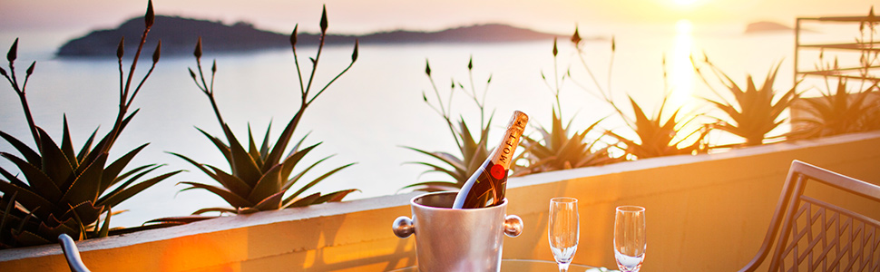
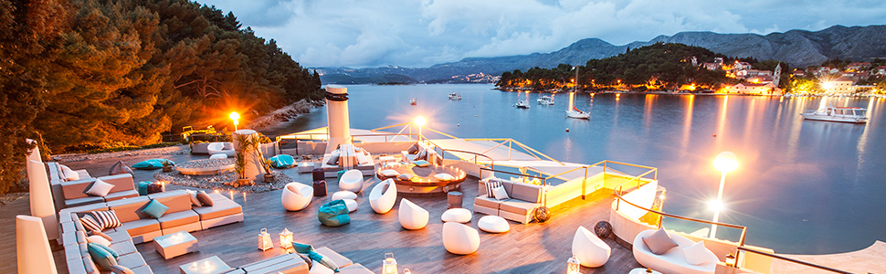
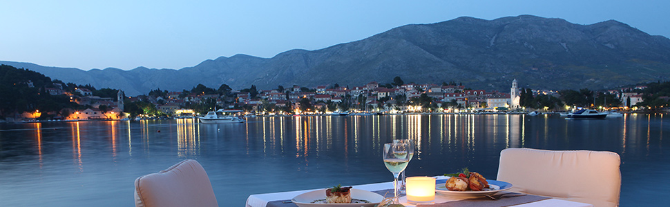
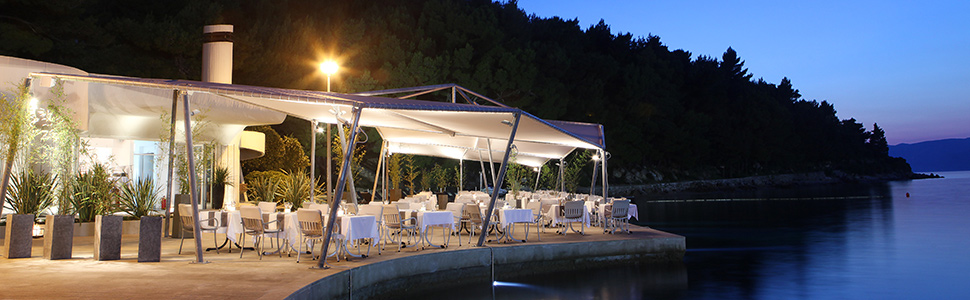
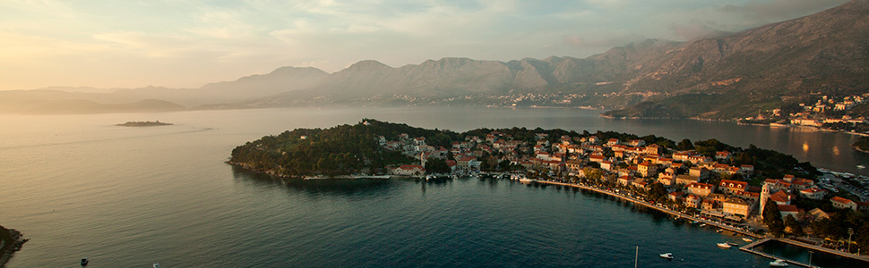
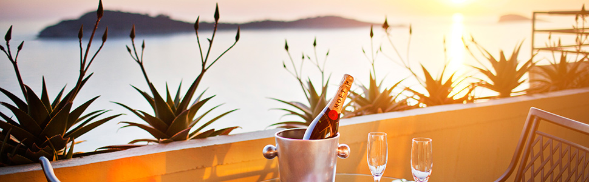
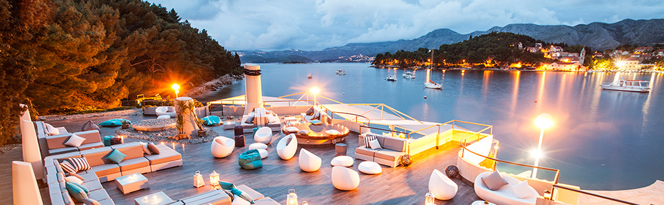
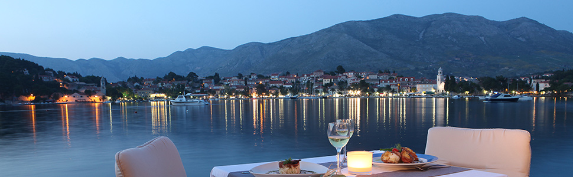
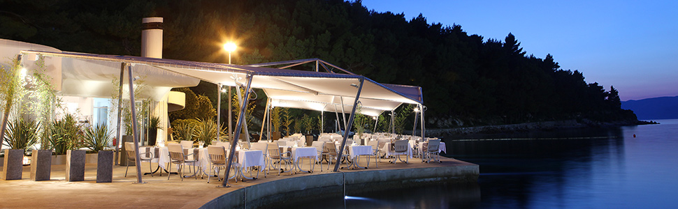
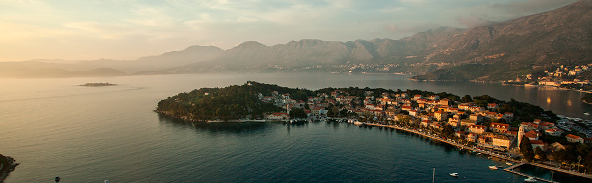

External Link to Use

Bjelica dobitnik nagrade "FIEP Europe Thulin Award"(Vijesti, 28.08.2022)
Bjelici u Finskoj uručena najprestižnija nagrada “FIEP Europe Thulin Award”(CDM, 28.08.2022)
Bjelici prestižna nagrada u Finskoj(MinaNews, 28.08.2022)
Promovisana knjiga “BIO-bibliografija prof. dr Duška Bjelice”(RTNK 13.05.2022)
Promovisana knjiga “BIO-bibliografija prof. dr Duška Bjelice”(RTNK 11.05.2022)
Promocija knjige “BIO-bibliografija prof. dr Duška Bjelice”(CSA 05.05.2022)
Splićani partneri naučne konferencije CSA(Mina.news 10.12.2021)
Splićani partneri naučne konferencije CSA(UCG 10.12.2021)
Bjelica: Na programu smo Evropskog koledža sportskih nauka(Standard 10.12.2021)
Tirana i Kukeši na skeneru nikšićkih difovaca(Dan, 26.04.2021)
{kind=link}
Novi broj časopisa JASPE: Tema i vježbe za problem bola u leđima(UCG 26.04.2021)
Testirani fudbaleri najtrofejnijeg kluba u Albaniji(UCG 23.04.2021)
Testiranjem Kukešija nastavljena mjerenja fudbalera u Albaniji(UCG 23.04.2021)
Dekan Popović o međunarodnoj naučnoj CSA konferenciji za TV Nikšić(UCG 14.04.2021)
Aprilsko izdanje časopisa MJSSM ogledalo uspjeha CSA konferencije 2021(Portalanalitika 13.04.2021)
Uručenjem nagrada za najbolje završena naučna konferencija CSA(rtnk.me 11.04.2021)
NAUČNA KONFERENCIJA CSA: Predstavljeno 60 istraživačkih radova(standard.co.me 11.04.2021)
Predstavljeno 60 istraživačkih radova(Dnevne novine 11.04.2021.)
.png){kind=link}
Predstavljeno 60 istraživačkih radova(rtcg.me 11.04.2021)
Godišnja naučna konferencija Crnogorske sportske akademije(FOSMedia 11.04.2021.)
Predstavljeno 60 istraživačkih radova(Dnevne novine 11.04.2021.)
.png){kind=link}
Predstavljeno 60 istraživačkih radova(Dnevne novine 10.04.2021.)
{kind=link}
Otvorena MSA konferencija u Dubrovniku: Dekanu Stevu Popoviću uručena Thulin nagrada(UCG 09.04.2021)
O sportskim dostignućima u Budvi(AntenaM 15.03.2021)
O nastavku antropometrijskih mjerenja sportskih kolektiva na RTV Nikšić(UCG, 05.02.2021)
Testirane košarkašice Crne Gore pred odlučujuće mečeve u Podgorici(UCG, 02.02.2021)
Testirani vaterpolisti Srbije aktuelni olimpijski šampioni(UCG, 28.01.2021)
Testirane crnogorske Ajkule(UCG, 26.01.2021)
Testirani kadeti i omladinci FK Podgorica(UCG, 21.01.2021)
Prestižna evropska nagrada za profesore Popovića i Bjelicu(Pobjeda, 14.01.2021)
Popović: U 2021. godinu Fakultet ulazi sa velikim planovima(aktuelno.me, 14.12.2020)
Popović: U 2021. godinu Fakultet ulazi sa velikim planovima(mladiniksica, 14.12.2020)
Duško Bjelica prvi na Google Scholar listi po citiranosti na Univerzitetu Crne Gore(CDM, 11.12.2020)
Profesor Bjelica prvi po citiranosti na Gugl Znalcu(RTCG, 11.12.2020)
BESPLATNO TESTIRANJE PODGORIČKIH UČENIKA(Dnevne novine, 21.12.2020)
Sjutra počinje besplatno sedmodnevno testiranje srednjoškolaca i osnovaca(FOS Media, 30.11.2020)
I bokseri na skeneru(Dan, 21.11.2020)
Ambasadorka Ukrajine posjetila Fakultet za sport i fizičko vaspitanje UCG u Nikšiću(UCG, 04.11.2020)
CSA konferencija najavljena u oktobarskom biltenu HEPA Evropa(UCG, 27.10.2020)
Novosađani na skeneru difovaca(DAN, 28.10.2020)
Suzbijanje dopinga i diskriminacije(DAN, 27.10.2020)
Popović-Jukić: Intenzivirati saradnju kroz nove projekte i nova umrežavanja(aktuelno.me, 27.10.2020)
Oktobarsko izdanje međunarodnog naučnog časopisa JASPE dostupno za čitaoce(UCG, 26.10.2020)
Testirani najbolji vaterpolisti Vojvodine iz Novog Sada(UCG, 16.10.2020)
Testirani vaterpolisti iz Novog Sada(Portal Analitika, 16.10.2020)
UCG: Evropski kongres FIEP sa CSA Konferencijom(Mladi Niksića, 20.09.2020)
MSA Dubrovnik 2021(UCG, 09.08.2020)
Prijem radova za internacionalnu CSA naučnu konferenciju počinje danas(UCG, 01.07.2021)
Prijem radova za internacionalnu CSA naučnu konferenciju počinje danas(Portal Analitika, 01.07.2021)
Prijem naučnih radova za internacionalnu CSA naučnu konferenciju od danas(Makanje, 01.07.2021)
Blagojev hobi prerastao u Muzej sporta(Vijesti, 15.06.2021)
U biltenu HEPA Evrope o Crnogorskoj sportskoj akademiji(UCG, 22.05.2020)
Nagrada za najbolji esej na temu fizičke aktivnosti u izolaciji pripala novinaru(UCG, 25.04.2020)
Profesor Božić: COVID 19 preselio naučni i obrazovni rad u dom(UCG, 20.04.2020)
Pristižu prijave za Međunarodni nagradni konkurs, otvoren do 22. aprila(UCG, 19.04.2020)
Pristižu prijave za Međunarodni nagradni konkurs, otvoren do 22. travnja(Hercegovina.in, 13.04.2020)
Radovi posljednje CSA konferencije objavljeni u aprilskom izdanju časopisa MJSSM(UCG, 08.04.2020)
Virus nas ne može zaustaviti da radimo dobre stvari na polju nauke(Portal analitika, 03.04.2020)
Bjelica: Konferencija sa šest plenarnih predavača svjetskog renomea(MINA, 02.04.2020)
Međunarodna online konferencija CSA okupila oko 200 naučnika iz 46 zemalja(Vijesti, 02.04.2020)
Konferencija CSA održaće se u planiranom terminu od 2. aprila u video formatu(DAN, 29.03.2020)
CSA konferencija okuplja naučnike svijeta u zakazanom terminu(Portal Analitika, 28.03.2020)
Konferencija od 2. do 5. aprila u video formatu(Portal MINA, 28.03.2020)
Konkurs za esej: Sport i fizička aktivnost u izolaciji izazvanoj koronavirusom(Vijesti, 26.03.2020)
Sva izdanja časopisa Montenegrin Journal of Sports Science and Medicine(UCG, 22.02.2020)
Sedam plenarnih predavača svijeta na CSA konferenciji 2020 (UCG, 22.01.2020.)
Sedam plenarnih predavača svijeta na CSA konferenciji 2020. godine (Portal Hercegovina, 22.01.2020.)
Sedam plenarnih predavača svijeta na CSA konferenciji 2020. (Portal Analitika, 22.01.2020.)
Povratak Ane Milačić na staze uspjeha (UCG, 18.01.2020.)
Prvi broj međunarodnog naučnog časopisa JASPE u 2020. godini (UCG, 16.01.2020.)
Objavljeno 10 radova u časopisu JASPE (Portal Mladi Nikšića, 16.01.2020.)
Prvi broj međunarodnog naučnog časopisa JASPE u 2020. godini (Portal Hercegovina, 16.01.2020.)
Prvi broj međunarodnog naučnog časopisa JASPE u 2020. godini (Portal Analitika, 16.01.2020.)
Doc. dr Bojan Mašanović: Znanje je najveća nagrada (UCG, 10.01.2020.)
CSA konferencija 2020: Zbog velikog interesovanja pomjeren rok za predaju radova (UCG, 11.12.2019.)
Veliko interesovanje naučnika, produžen rok za prijavu na CSA konferenciju (Portal CdM, 10.12.2019.)
{kind=link}
{kind=link}
{kind=link}
UCG: Radovi Bjelice najviše citirani (Portal Analitika, 06.12.2019.)
Bjelica najcitiraniji iz oblasti sportskog treninga (Portal FOS, 06.12.2019.)
Internacionalna boćarska konfederacija novi partner CSA konferencije (Portal Analitika, 19.11.2019.)
Internacionalna boćarska konfederacija novi partner CSA konferencije (UCG, 19.11.2019.)
{kind=link}
Svjetski poznata imena nauke na CSA konferenciji i u 2020. godini (Portal CdM, 17.11.2019.)
Svjetski poznata imena nauke na CSA konferenciji i u 2020. godini (UCG, 16.11.2019.)
Svjetski poznata imena nauke na CSA konferenciji i u 2020. godini (Portal Hercegovina, 16.11.2019.)
Svjetski poznata imena nauke na CSA konferenciji i u 2020. godini (Portal Aktuelno, 16.11.2019.)
Na međunarodnom kongresu u Rimu predstavljena CSA konferencija (UCG, 9.11.2019.)
Na međunarodnom kongresu u Rimu predstavljena CSA konferencija (Portal Mladi Niksica, 9.11.2019.)
Na međunarodnom kongresu u Rimu predstavljena CSA konferencija (Portal FOS Media, 9.11.2019.)
Na međunarodnom kongresu u Rimu predstavljena CSA konferencija (Portal Antena M, 9.11.2019.)
Na međunarodnom kongresu u Rimu predstavljena CSA konferencija (Portal Analitika, 9.11.2019.)
Oktobarsko izdanje naučnog časopisa "JASPE" (UCG, 8.10.2019.)
{kind=link}
Oktobarsko izdanje naučnog časopisa "Sport Mont" objavljeno (UCG, 3.10.2019.)
{kind=link}
Objavljen udžbenik "Teorija tjelesnog vježbanja i sporta" (Portal Onogost, 25.09.2019.)
Teorija tjelesnog vježbanja i sporta (Portal Researchgate, 19.09.2019.)
Laureati Montenegrin Journal of Sports Science and Medicine (UCG, 24.09.2019.)
{kind=link}
{kind=link}
Fakultet za sport izdao novi broj časopisa za sportsku nauku i medicinu (Portal CdM, 27.8.2019.)
{kind=link}
Radovi najprestižnijeg naučnog skupa u sportskim naukama ulaze u Web of Science (UCG, 25.8.2019.)
Sva izdanja časopisa Montenegrin Journal of Sports Science and Medicine (UCG, 24.7.2019.)
Sva izdanja časopisa Sport Mont (UCG, 22.7.2019.)
TV VIJESTI - Nikoli Vučeviću uručena Zlatna plaketa na Univerzitetu Crne Gore (Youtube, 22.7.2019.)
Sva izdanja časopisa Journal of Anthropology of Sport and Physical Education (UCG, 21.7.2019.)
Zlatna plaketa Nikoli Vučeviću za promociju crnogorskog sporta! (Portal Standard, 21.7.2019.)
Dnevne novine, vikend, 20. i 21.7.2019.
{kind=link}
{kind=link}
{kind=link}
Nikoli Vučeviću uručena Zlatna plaketa na Univerzitetu Crne Gore (Portal Reprezentacija, 20.7.2019.)
Nikoli Vučeviću uručena Zlatna plaketa na Univerzitetu Crne Gore (UCG, 19.7.2019.)
Nikola Vučević o nagradi koju je dobio za izvanredne sportske rezultate (Youtube, 19.7.2019.)
Dekan prof. dr Stevo Popović - Uručivanje Zlatne plakete Nikoli Vučeviću (Youtube, 19.7.2019.)
Nikoli Vučeviću uručena Zlatna plaketa na Univerzitetu Crne Gore (Youtube, 19.7.2019.)
Nikoli Vučeviću uručena Zlatna plaketa na Univerzitetu Crne Gore (Portal CdM, 19.7.2019.)
Vučeviću uručena Zlatna plaketa na UCG-u (Portal Analitika, 19.7.2019.)
>Nikoli Vučeviću Zlatna plaketa Univerziteta Crne Gore (Portal Volim Podgoricu, 19.7.2019.)
Nikoli Vučeviću uručena Zlatna plaketa na Univerzitetu Crne Gore (Portal FOS, 19.7.2019.)
Veliko priznanje: Vučeviću uručena zlatna plaketa UCG (Portal Aktuelno, 19.7.2019.)
PRIZNANJE ZA ASA: Nikoli Vučeviću uručena Zlatna plaketa (MNE magazin, 19.7.2019.)
Vučeviću uručena Zlatna plaketa (Portal RTCG, 19.7.2019.)
Nikoli Vučeviću uručena Zlatna plaketa na Univerzitetu Crne Gore (Portal Mladi Niksica, 19.7.2019.)
Objavljeno srpanjsko izdanje naučnog časopisa JASPE - 2019. (Portal Hercegovina, 13.7.2019.)
{kind=link}
Objavljeno julsko izdanje naučnog časopisa JASPE - 2019. (UCG, 11.7.2019.)
Objavljeno julsko izdanje naučnog časopisa JASPE - 2019. (Portal Volim Podgoricu, 11.7.2019.)
Objavljeno julsko izdanje naučnog časopisa JASPE - 2019. (Portal Mladi Niksica, 11.7.2019.)
{kind=link}
Nikoli Vučeviću zlatna plaketa MJSSM (FOTO) (Portal Reprezentacija, 2.7.2019.)
Nikoli Vučeviću zlatna plaketa MJSSM (Portal Standard, 2.7.2019.)
Vučeviću zlatna plaketa za promociju crnogorskog sporta (Portal RTCG, 2.7.2019.)
Nikoli Vučeviću zlatna plaketa MJSSM (UCG, 2.7.2019.)
Nikoli Vučeviću zlatna plaketa MJSSM (Portal FOS, 2.7.2019.)
Zlatna plaketa Nikoli Vučeviću (Portal Analitika, 2.7.2019.)
Nikoli Vučeviću zlatna plaketa (Portal Vijesti, 2.7.2019.)
Nikoli Vučeviću zlatna plaketa MJSSM (Portal AntenaM, 2.7.2019.)
Vučeviću zlatna plaketa (Portal MinaNews, 2.7.2019.)
Nikoli Vučeviću zlatna plaketa MJSSM (Portal Volim Podgoricu, 2.7.2019.)
Vučeviću zlatna plaketa za promociju crnogorskog sporta (Portal CdM, 2.7.2019.)
MJSSM dodijelio zlatnu plaketu proslavljenom džudisti Srđanu Mrvaljeviću (UCG, 27.6.2019.)
RTNK - MJSSM dodijelio zlatnu plaketu Srđanu Mrvaljeviću (YouTube, 27.6.2019.)
Zlatna plaketa za Srđana Mrvaljevića (Portal Vijesti, 27.6.2019.)
Mrvaljeviću zlatna plaketa za izuzetne sportske rezultate (Portal FOS, 27.6.2019.)
Srđan Mrvaljević nagrađen zlatnom plaketom (Portal Onogost, 27.6.2019.)
Mrvaljević dobio zlatnu plaketu (Portal CdM, 27.6.2019.)
Mrvaljeviću zlatna plaketa (Portal RTCG, 27.6.2019.)
Mrvaljeviću zlatna plaketa (Portal Analitika, 27.6.2019.)
U Cavtatu međunarodna konferencija o sportu (Portal RTCG, 17.6.2019.)
{kind=link}
{kind=link}
Lipanjsko izdanje naučnog časopisa Sport Mont (Portal Hercegovina, 7.6.2019.)
Junsko izdanje naučnog časopisa Sport Mont (Portal Analitika, 7.6.2019.)
Junsko izdanje naučnog časopisa Sport Mont (UCG, 6.6.2019.)
Nakon šampiona Kosova testirani mladi igrači trostrukog prvaka Sjeverne Makedonije (UCG, 3.6.2019.)
Nikšicani testirali juniore i kadete trostrukog prvaka Kosova (UCG, 2.6.2019.)
Nikšicani testirali juniore i kadete trostrukog prvaka Kosova (Portal Hercegovina, 2.6.2019.)
{kind=link}
{kind=link}
Gojazniji u selu nego u gradu (Portal Vijesti, 13.5.2019.)
Svjetski naučnici dokazali: Gojazniji u selu nego u gradu na globalnom nivou (UCG, 12.5.2019.)
Gojazniji u selu nego u gradu na globalnom nivou (Portal Analitika, 12.5.2019.)
Svjetski naučnici dokazali: Gojazniji u selu nego u gradu (Portal AntenaM, 12.5.2019.)
Svjetski naučnici dokazali: Gojazniji u selu nego u gradu (Portal MinaNews, 12.5.2019.)
"Gojazniji u selu nego u gradu" (Portal RTCG, 12.5.2019.)Svjetski naučnici dokazali: Gojazniji u selu nego u gradu (Portal FosMedia, 12.5.2019.)
Gojaznost češca na selu, nego u gradovima (Dnevnik 2 RTCG1, 12.5.2019.)
Gojaznog stanovništva više je na selima, nego u gradovima (Zurnal Prva, 12.5.2019.)
Objavljena nova knjiga iz edicije Laureati crnogorskog sporta (Jutarnji program RTCG, 6.5.2019.)
{kind=link}
{kind=link}
Aprilsko izdanje časopisa JASPE (Portal Mladi Niksica, 1.5.2019.)
Aprilsko izdanje časopisa JASPE (UCG, 26.4.2019.)
Aprilsko izdanje časopisa JASPE (Portal Mladi Niksica, 26.4.2019.)
Objavljena knjiga o laureatima crnogorskog sporta za 2018. godinu (UCG, 24.4.2019.)
Objavljena knjiga o laureatima crnogorskog sporta za 2018. godinu (Portal Analitika, 24.4.2019.)
Objavljena knjiga o laureatima crnogorskog sporta za 2018. godinu (Portal Kodex, 24.4.2019.)
Objavljena knjiga o laureatima crnogorskog sporta za 2018. godinu (Portal CdM, 24.4.2019.)
Prof. dr Milan Žvan: Poželjno je graditi ski centre i održavati skijašku kulturu (UCG, 21.4.2019.)
Žvan: Poželjno je graditi ski centre i održavati skijašku kulturu (Portal Aktuelno, 21.4.2019.)
"Gradite ski centre i održavajte skijašku kulturu" (Portal RTCT, 21.4.2019.)
Poželjno je graditi ski centre i održavati skijašku kulturu (Portal FOS, 21.4.2019.)
Žvan: Poželjno je graditi ski centre i održavati skijašku kulturu (Portal AntenaM, 21.4.2019.)
Regionalni profesori na CSA konferenciji u Dubrovniku (YouTube, 21.4.2019.)
Otvaranje 16. CSA naučne konferencije o sportu u Dubrovniku (Youtube, 17.4.2019.)
Testirani i igrači KMF "Nikšic" (UCG, 15.4.2019.)
Predstavljamo najbolje naučnice CSA konferencije iz Kanade i Slovenije (UCG, 14.4.2019.)
Najbolje naučnice CSA konferencije iz Kanade i Slovenije (CdM, 14.4.2019.)
Najbolje naučnice CSA konferencije u Dubrovniku 2019. RTCG (Youtube, 14.4.2019.)
CEEPUS škola u okviru CSA konferencije u Dubrovniku, RTCG (Youtube, 13.4.2019.)
EU Kutak/ MSA Dubrovnik 2019. (Jutarnji program RTCG, 13.4.2019.)
{kind=link}
Vaterpolisti kluba "Jadran Carine" testirani pred finalnu utakmicu Len Euro Kupa (UCG, 12.4.2019.)
Vaterpolisti Jadrana testirani pred utakmicu godine (CdM, 12.4.2019.)
KMF "Studentski dom" testiran u Podgorici (UCG, 12.4.2019.)
KMF Studentski dom testiran u Podgorici (Portal Volim Podgoricu, 11.4.2019.)
KMF "Studentski dom" testiran u Podgorici (Portal Mladi Niksica, 11.4.2019.)
{kind=link}
{kind=link}
CSA konferencija prevazišla sva očekivanja (CdM, 8.4.2019.)
Dodjelom nagrada završena 16. Međunarodna naučna konferencija (Portal Vijesti, 8.4.2019.)
CSA konferencija prevazišla sva očekivanja (Portal Volim Podgoricu, 8.4.2019.)
Proglašenjem najboljih naučnika završena CSA konferencija (UCG, 7.4.2019.)
Dodjelom nagrada završena 16. Međunarodna naučna konferencija (Portal Vijesti, 7.4.2019.)
Proglašene najbolje naučnice na CSA konferenciji (RTCG, 7.4.2019.)
Proglašenjem najboljih naučnika završena CSA konferencija (Portal FOS, 7.4.2019.)
Bjelica: Najjači brend u oblasti sportskih nauka (Portal RTCG, 5.4.2019.)
Dubrovnik: Otvorena konferencija u oblasti sportskih nauka (Portal Analitika, 5.4.2019.)
Otvorena konferencija u Dubrovniku (Portal CdM, 5.4.2019.)
Predsjedavajuci CSA konferencije prof. dr Duško Bjelica (YouTube, 5.4.2019.)
"Najjači smo brend u oblasti sportskih nauka" (Portal Mondo, 5.4.2019.)
"Najjači smo brend u oblasti sportskih nauka" (Etleboro, 5.4.2019.)
{kind=link}
Najveci događaj u oblasti sportskih nauka - 5. aprila zvanično otvaranje (CdM, 4.4.2019.)
{kind=link}
Testirani i šampioni Hrvatske u malom fudbalu (UCG, 29.3.2019.)
Testirani i prvaci Hrvatske u malom nogometu (Portal Hercegovina info, 29.3.2019.)
{kind=link}
Izgradnja naučne baze podataka sa vrhunskim sportistima malog fudbala (UCG, 27.3.2019.)
Izgradnja naučne baze podataka sa vrhunskim sportistima malog fudbala (Portal CdM, 27.3.2019.)
Sve je spremno za najveci naučni događaj u sportu (UCG, 25.3.2019.)
Sve je spremno za najveci naučni događaj u sportu (Portal VolimPodgoricu, 25.3.2019.)
Sve je spremno za veliku konferenciju u Dubrovniku (CdM, 25.3.2019.)
{kind=link}
{kind=link}
{kind=link}
CSA konferencija - naučni događaj svjetskih razmjera u aprilu (UCG, 17.3.2019.)
Konferencija u Dubrovniku od 4. do 7. aprila (Portal MinaNews, 17.3.2019.)
CSA konferencija - naučni događaj svjetskih razmjera u aprilu (Portal FOS, 17.3.2019.)
CSA konferencija u aprilu u Dubrovniku (Portal Analitika, 17.3.2019.)
{kind=link}
{kind=link}
žene naučnici imaju važno mjesto na internacionalnoj konferenciji u oblasti sporta (UCG, 8.3.2019.)
{kind=link}
{kind=link}
CEEPUS obuka studenata na CSA konferenciji (UCG, 6.3.2019.)
CEEPUS obuka studenata na CSA konferenciji (Portal FOS, 6.3.2019.)
CEEPUS obuka studenata na CSA konferenciji (Portal Volim Podgoricu, 6.3.2019.)
{kind=link}
Nikolic i Bjelica posjetili Anu Milačic (UCG, 24.2.2019.)
Bjelica i Nikolic u posjeti Anu Milačic (CdM, 24.2.2019.)
Nikolic i Bjelica posjetili Anu Milačic (Portal RTCG, 24.2.2019.)
Profesori Nikolic i Bjelica posjetili rukometašicu Anu Milačic u Atini (Portal FOS, 24.2.2019.)
Bjelica i Nikolic posjetili Anu Milačic (Portal Analitika, 24.2.2019.)
Danilo Nikolic i Duško Bjelica posjetili Anu Milačic (Portal Mladi Niksica, 24.2.2019.)
Profesori Nikolic i Bjelica posjetili rukometašicu Anu Milačic (Portal Aktuelno, 24.2.2019.)
Nikolic i Bjelica posjetili Anu Milačic (Portal Reprezentacija, 24.2.2019.)
CSA konferencija na svjetskoj listi događaja u oblasti nauke o sportu (UCG, 19.2.2019.)
Rekordan broj radova na naučnoj konferenciji u Dubrovniku (Portal FosMedia, 19.2.2019.)
CSA konferencija na svjetskoj listi događaja u oblasti nauke o sportu (CdM, 19.2.2019.)
{kind=link}
{kind=link}
Testirana i muška kadetska rukometna reprezentacija (UCG, 15.2.2019.)
Testirana muška kadetska reprezentacija (CdM, 15.2.2019.)
Testirana i muška kadetska rukometna reprezentacija (Portal Reprezentacija, 15.2.2019.)
Prvotimci OFK Titograd ponovo testirani (UCG, 14.2.2019.)
Prvotimci OFK Titograd ponovo testirani (Portal Analitika, 14.2.2019.)
Fudbaleri Titograda ponovo testirani (CdM, 14.2.2019.)
FSNK: OFK Titograd ponovo testiran (Portal Aktuelno, 14.2.2019.)
U martu novi broj - "Montenegrin Journal of Sports Science and Medicine" (UCG, 13.2.2019.)
U martu novi broj časopisa za sportsku nauku (Portal CdM, 13.2.2019.)
{kind=link}
{kind=link}
Februarsko izdanje časopisa Sport Mont indeksirano u 44 svjetske naučne baze (UCG, 4.2.2019.)
Februarsko izdanje časopisa Sport Mont indeksirano u 44 svjetske naučne baze (CdM, 4.2.2019.)
{kind=link}
{kind=link}
{kind=link}
UCG: časopis JASPE u 35 svjetskih naučnih baza (Mondo, 27.1.2019.)
časopis JASPE u 35 svjetskih naučnih baza (CdM, 27.1.2019.)
UCG: časopis JASPE u 35 svjetskih naučnih baza (Mondo, 27.1.2019.)
časopis JASPE u 35 svjetskih naučnih baza (UCG, 27.1.2019.)
{kind=link}
{kind=link}
USPOSTAVLJENA SARADNJA CSA I ALBANSKE ASOCIJACIJE U OBLASTI SPORTA (Rtv NK, 25.1.2019.)
{kind=link}
{kind=link}
{kind=link}
Rekordan broj radova i učesnika iz 50 zemalja svijeta (Univerzitet Crne Gore, 16.1.2019.)
Rekordan broj radova i učesnika iz 50 zemalja svijeta (Volim Podgoricu, 16.1.2019.)
Rekordan broj radova i učesnika iz 50 zemalja svijeta (CdM, 16.1.2019.)
Rekordan broj radova i učesnika (Univerzitet Crne Gore, 6.1.2019.)
CSA konferencija: Rekordan broj radova i učesnika (Portal Analitika, 6.1.2019.)
Pristigao rekordan broj radova (Mina- Business, 6.1.2019.)
Rekordan broj radova i učesnika (CdM, 6.1.2019.)
{kind=link}
Dubrovnik domacin konferencije Crnogorske sportske akademije (CdM, 12.11.2018.)
Obilježene dvije godine uspjeha (CdM, 31.10.2018.)
{kind=link}
{kind=link}
{kind=link}
{kind=link}
{kind=link}
{kind=link}
Impresivna bibliografija (Novine Nikšica, 24.10.2018.)
Televizija Crne Gore, Promovisana knjiga Prof dr Duško Bjelica bio (YouTube, 23.10.2018.)
Promocija knjige Bio-bibliografija prof. dr Duška Bjelice (Volim Podgoricu, 23.10.2018.)
Duško Bjelica: Rekordna bibliografija sa sportskom tematikom (Hercegovina Info, 23.10.2018.)
Rekordna bibliografija sa sportskom tematikom (Portal Analitika, 22.10.2018.)
Rekordna bibliografija sa sportskom tematikom (CdM, 22.10.2018.)
Promovisana Bio-bibliografija Duška Bjelice (RTCG, 22.10.2018.)
Rekordna bibliografija sa sportskom tematikom (Univerzitet Crne Gore, 22.10.2018.)
Promocija Bio-bibliografije: Prof. dr Duško Bjelica (YouTube, 22.10.2018.)
{kind=link}
Promocija knjige Bio-bibliografija prof. dr Duška Bjelice (Univerzitet Crne Gore, 13.10.2018.)
Svjetski naučnici na CSA konferenciji (CdM, 03.10.2018.)
Imena svjetskih naučnika u oblasti sporta na CSA konferenciji (Kodex, 03.10.2018.)
Oktobarsko izdanje naučnog časopisa Sport Mont Journal (CdM, 01.10.2018.)
Oktobarsko izdanje naučnog časopisa "Sport Mont Journal" (Onogošt, 01.10.2018.)
Oktobarsko izdanje naučnog časopisa Sport Mont Journal (Volim Podgoricu, 01.10.2018.)
Oktobarsko izdanje naučnog časopisa Sport Mont Journal (Univerzitet Crne Gore, 01.10.2018.)
Konferencija CG naučnika najvažniji međunarodni događaj (RTCG, 20.09.2018.)
CSA konferencija na listi najprestižnijih svjetskih događaja (Portal Analitika, 20.09.2018.)
{kind=link}
{kind=link}
{kind=link}
Conference on Sport, Physical Activity and Health (ICSSPE, 17.08.2018.)
Lider u crnogorskom naučnom izdavaštvu (CdM, 12.08.2018.)
Počelo prijavljivanje za CSA konferenciju u Dubrovniku (CdM, 06.08.2018.)
Počelo prijavljivanje za CSA konferenciju u Dubrovniku (Univerzitet Crne Gore, 06.08.2018.)
{kind=link}
{kind=link}
{kind=link}
Objavljena knjiga "Laureati crnogorskog sporta 2017." (RTCG, 31.07.2018.)
Nova knjiga iz edicije "Laureati crnogorskog sporta" (Univerzitet Crne Gore, 31.07.2018.)
{kind=link}
XVI Međunarodna naučna konferencija 2019. godine u Dubrovniku (Univerzitet Crne Gore, 09.07.2018.)
CSA konferencija regrutuje nove mlade istraživače (Volim Podgoricu, 29.06.2018.)
CSA konferencija regrutuje nove mlade istraživače (Univerzitet Crne Gore, 29.06.2018.)
CSA konferencija regrutuje nove mlade istraživače (Antena M, 29.06.2018.)
Međunarodna naučna konferencija o sportu dogodine u Dubrovniku (Reprezentacija.me, 09.07.2018.)
Međunarodna naučna konferencija o sportu dogodine u Dubrovniku (CdM, 09.07.2018.)
Međunarodna naučna konferencija o sportu u Dubrovniku (Portal Analitika, 09.07.2018.)
Konferencija u BD odlična prilika za izgradnju novih naučnih veza (Portal Analitika, 18.06.2018.)
Nova imena iz svijeta nauke na CSA konferenciji (Volim Podgoricu, 18.06.2018.)
Nova imena iz svijeta nauke na CSA konferenciji (Antena M, 18.06.2018.)
{kind=link}
UCG: Izašao junski broj naučnog časopisa Sport Mont (Pink M, 12.06.2018.)
Zatvaranje XV Međunarodne naučne konferencije u Budvi, RTCG (YouTube, 23.04.2018.)
15. Međunarodna naučna sportska konferencija u Budvi 2018, Razgovori RTCG (YouTube, 23.04.2018.)
15. Međunarodna naučna sportska konferencija u Budvi 2018, Razgovori 2 - RTCG (YouTube, 23.04.2018.)
15. Međunarodna naučna sportska konferencija u Budvi, Sportski dnevnik RTCG (YouTube, 16.04.2018.)
15. Međunarodna naučna sportska konferencija u Budvi, Dnevnik 1 RTCG (YouTube, 16.04.2018.)
Uručene nagrade i plakete (RTCG, 15.04.2018.)
Uručena priznanja najboljima sa Međunarodne naučne konferencije o sportu (CdM, 15.04.2018.)
{kind=link}
{kind=link}
{kind=link}
Uručena prizanja najboljima (Univerzitet Crne Gore, 16.04.2018.)
Podstaci razvoj sportske nauke u CG (RTCG, 13.04.2018.)
Otvorena konferencija o transformacionim procesima u sportu (CdM, 13.04.2018.)
U Budvi otvorena Konferencija o transformacionim procesima u sportu (Vijesti, 13.04.2018.)
{kind=link}
{kind=link}
{kind=link}
Otvaranje XV Međunarodne naučne konferencije sjutra u podne (Portal Analitika, 12.04.2018.)
{kind=link}
Bjelica: CSA ce ugostiti 350 učesnika sa četiri kontinenta (Portal Analitika, 09.04.2018.)
Na konferenciji o sportu naučnici sa četiri kontinenta (CdM, 09.04.2018.)
{kind=link}
{kind=link}
{kind=link}
Objavljen novi broj časopisa SportMont (RTCG, 26.01.2018.)
Objavljen novi broj časopisa SportMont (Onogost, 27.01.2018.)
Objavljen novi broj časopisa SportMont (Portal Analitika, 26.01.2018.)
Objavljen novi broj časopisa SportMont (Univerzitet Crne Gore, 26.01.2018.)
{kind=link}
CSA u Budvi okuplja 400 sportskih stručnjaka (Onogošt, 05.01.2018.)
CSA u Budvi okuplja 400 sportskih stručnjaka (Mladi Nikšica, 04.01.2018.)
CSA u Budvi okuplja 400 sportskih stručnjaka (Univerzitet Crne Gore, 04.01.2018.)
časopis SportMont u prestižnoj naučnoj bazi Scopus (CdM, 13.12.2017.)
SportMont u prestižnoj naučnoj bazi Scopus (Portal Analitika, 13.12.2017.)
časopis SportMont u prestižnoj naučnoj bazi Scopus (Volim Podgoricu, 13.12.2017.)
časopis SportMont u prestižnoj naučnoj bazi Scopus (Univerzitet Crne Gore, 13.12.2017.)
{kind=link}
AIESEP Newsletter,
15.11.2017.
Prof. dr Duško Bjelica - Bio-bibliografija (Fakultet za sport i
fizičko
vaspitanje, 10.11.2017.) AIESEP Newsletter
#152,
13.10.2017. Rad crnogorskih naučnika u prestižnom časopisu
"Lancet" (Univerzitet
Crne Gore, 12.10.2017.) Rad crnogorskih naučnika u prestižnom časopisu
"Lancet" (Portal
Analitika, 12.10.2017.) Rad crnogorskih naučnika u prestižnom časopisu
"Lancet" (Kodex.me,
12.10.2017.) RAD CRNOGORSKIH NAUčNIKA objavljen u prestižnom
časopisu "Lancet" (Pink
M, 12.10.2017.) Rad crnogorskih naučnika u prestižnom časopisu
"Lancet" (Volim
Podgoricu, 12.10.2017.) Za četiri decenije udesetostručen broj gojazne djece i
mladih (Univerzitet
Crne Gore, 12.10.2017.) AIESEP
Newsletter,
14.09.2017. SPORTSKA 2016. NA JEDNOM MJESTU: "LAUREATI CRNOGORSKOG SPORTA" (Pink
M,
11.09.2017.) Sportska 2016. na jednom mjestu (PV portal, 11.09.2017.) Sportska 2016. na jednom mjestu (BARinfo, 10.09.2017.) SPORTSKA 2016-TA NA JEDNOM MJESTU (Udruženje sportskih novinara
Crne Gore,
10.09.2017.) Jedanaesta knjiga iz edicije Laureati crnogorskog sporta
(Univerzitet Crne Gore,
11.09.2017.) Najznačajnija sportska dešavanja u knjizi Bjelice,
Gavrilovica i Brajkovica
(Vijesti, 08.09.2017.) Bjelica i Popovic u akademskom odboru AESA (FOSMedia,
11.08.2017.) Mεγάλη
δʟάĸρʟση
γʟα τηv
Mίλάτσʟτς
σʟo Mαupoβσúvʟo
(Greek Handball,
01.07.2017.) Milačic: Pobjednički tim se ne mijenja (Vijesti,
01.07.2017.) Zlatna plaketa uručena Ani Milačic (Reprezentacija.me,
01.07.2017.) Dekan
Fakulteta za sport i fizičko vaspitanje Stevo Popovic (YouTube,
30.06.2017.) Rukometašica AEK-a Ana Milačic nakon dodjele zlatne
plakete (YouTube,
30.06.2017.) Zlatna plaketa uručena Ani Milačic (Portal Analitika,
30.06.2017.) Dubljevic: Da se ne priča o medaljama (RTCG, 29.06.2017.)
Uručena nagrada Bojanu Dubljevicu (Portal Analitika,
29.06.2017.) Dubi je
ponosni Nikšicanin (CdM, 29.06.2017.) Zlatna plaketa uručena Ani Milačic (Univerzitet Crne Gore,
30.06.2017.)
Uručenje nagrade za Anu Milačic (Univerzitet Crne Gore,
29.06.2017.) Ana Milačic: Princeza čelične volje (Magazin Nina,
29.06.2017.) Uručena nagrada Bojanu Dubljevicu (Univerzitet Crne Gore,
29.06.2017.) Dodjela nagrade za Bojana Dubljevica (Univerzitet Crne Gore,
29.06.2017.) Dubljevic: Predstavicemo Crnu Goru kako dolikuje!
(Reprezentacija.me, 29.06.2017.)
UCG:
PRIZNANJE ZA DUBLJEVICA (Pink M, 28.06.2017.) Dodjela nagrade Bojanu Dubljevicu na Fakultetu za sport u
Nikšicu (Portal
Analitika, 28.06.2017.) Bojanu Dubljevicu nagrada za izuzetne sportske rezultate
(Kosarka.me, 28.06.2017.)
U četvrtak uručenje nagrade Bojanu Dubljevicu
(Košarkaški savez
Crne Gore, 26.06.2017.) Dobra nauka mora biti primjenjiva u praksi (Fakultet za sport i
fizičko
vaspitanje UCG, 23.06.2017.) Senior
Lecturer in the Sport Sciences (18.06.2017.) PhD
Studentship in the Sport Sciences (18.06.2017.) Novi broj
naučnog časopisa "Sport Mont" (Novine Nikšica, 12.06.2017.) Milačic, Dubljevic i Hodžic dobili nagrade za izuzetne
sportske rezultate
(Vijesti, 09.06.2017.) Hodžic, Milačic i Dubljevic dobitnici nagrada za najbolje
sportiste (Portal
Analitika, 07.06.2017.) Nagrada za najbolje sportiste (Univerzitet Crne Gore,
07.06.2017.) OBJAVLJENA "Bio-Bibliografija" profesora Duška Bjelice (Pink M,
02.06.2017.)
Objavljena "Bio- Bibliografija" Duška Bjelice (Antena M,
02.06.2017.) Bio-bibliografija Bjelice na pet stotina stranica (CdM,
02.06.2017.) Izašao novi broj naučnog časopisa "Sport Mont"
(Portal Analitika,
01.06.2017.) UCG: Izašao novi broj naučnog časopisa "Sport Mont"
(Pink M,
01.06.2017.) Izašao novi broj naučnog časopisa "Sport Mont"
(Univerzitet Crne Gore,
01.06.2017.) Za sve grane nauke važno povezivanje naučnika (RTCG,
29.05.2017.) Konferencija referentno mjesto razmjene znanja u Evropi (Univerzitet
Crne Gore,
29.05.2017.) European Events in Sport Science (European College of Sport Science,
21.05.2017.)
Objavljena biobibliografija prof. dr Duška Bjelice (Portal
Analitika,
18.05.2017.) Objavljena Biobibliografija Duška Bjelice (RTCG,
18.05.2017.) Objavljena bibliografija dr Duška Bjelice (Vijesti,
18.05.2017.) Objavljena biobibliografija prof. dr Duška Bjelice (Univerzitet
Crne Gore,
18.05.2017.) Tonski zapis (Radio Slobodne Evrope, 16.05.2017.) Ko je najviši na Balkanu? (Radio Slobodna Evropa,
14.05.2017.) Konferencije važne za širenje naučnih saznanja i
povezivanje
naučnika (Antena M, 12.05.2017.) Konferencije važne za širenje saznanja i povezivanje
naučnika (Portal
Analitika, 13.05.2017.) Doc.
dr Stevo Popovic - RTV Niksic, O tjelesnoj visini Crnogoraca (YouTube,
11.05.2017.) Nauka i sport moraju zajedno, samo država može pomoci
(Pink M,
09.05.2017.) Prezentacija Centra za dijagnostiku (YouTube, 09.05.2017.) Sport ne
može bez nauke (Univerzitet Crne Gore, 09.05.2017.) Spoj nauke
i sporta (COK, 09.05.2017.) Spoj
nauke i sporta (Vijesti, 08.05.2017.) Naučne konferencije mjesta mobilizacije znanja (Univerzitet
Crne Gore,
06.05.2017.) Doc.
dr Stevo Popovic o tjelesnoj visini - RTCG, Jutarnji program (YouTube,
04.05.2017.) CUKA: Mobilnost i internacionalizacija univerziteta potreba regiona
(Pink M,
02.05.2017.) Mobilnost i internacionalizacija univerziteta potreba regiona (CdM,
02.05.2017.)
Mobilnost i internacionalizacija univerziteta potreba regiona
(Univerzitet Crne Gore,
02.05.2017.) Doc.
dr Stevo Popovic o tjelesnoj visini - RTV Vijesti, Bez granica (YouTube,
01.05.2017.) Doc.
dr Stevo Popovic o tjelesnoj visini - RTV Vijesti, Vijesti u pola 7 (YouTube,
26.04.2017.) Kolašinci i šavničani najviši na svijetu? (RTCG,
25.04.2017.)
Kolašinci i šavničani najviši na svijetu?!
(Kolektiv,
25.04.2017.) Kolašinci i šavničani najviši na svijetu!
(Antena M,
25.04.2017.) Popovic: Kolašinci i šavničani najvisočiji na
svijetu? (Portal
Analitika, 25.04.2017.) Kolašinci i šavničani najviši na svijetu? (CdM,
25.04.2017.)
Kolašinci i šavničani najviši na svijetu?
(Vijesti,
25.04.2017.) Kolašinci i šavničani najviši na svijetu
(Univerzitet Crne Gore,
25.04.2017.) žVAN: Naučne konferencije važne za
internacionalizaciju univerziteta
(Pink M, 23.04.2017.) Naučne konferencije važne za internacionalizaciju
univerziteta (Portal
Analitika, 23.04.2017.) Naučne konferencije važne za internacionalizaciju
univerziteta (Univerzitet
Crne Gore, 23.04.2017.) Predsjednik COK-a dobitnik plakete za promociju sportskih nauka
(COK, 08.04.2017.)
Tonski zapis (Radio Crne Gore, 08.04.2017.) VARELA SILVA ZA UCG: Nauka mora biti u službi građana
(Pink M,
14.04.2017.) Nauka mora biti u službi građana (Univerzitet Crne Gore,
14.04.2017.)
MSA Conference 2017 - Budva, Montenegro (AESA Magazine,
11.04.2017.) PREDSTAVNICI FAKULTETA za sport na naučnoj konferenciji u San
Dijegu (Pink M,
10.04.2017.) Predstavnici Fakulteta za sport na naučnoj konferenciji u San
Dijegu (Portal
Analitika, 10.04.2017.) Gušic najbolji mladi naučnik (RTCG, 02.04.2017.) Proglašenjem najboljih naučnika završena Konferencija
CSA (Antena M,
02.04.2017.) Gušic najbolji mladi naučnik (Antena M, 02.04.2017.)
OVO
SU NAJBOLJI mladi naučnik i žena naučnica (Pink M, 02.04.2017.)
U Budvi otvorena konferencija o sportu (FSNK, 31.03.2017.) OTVORENA Konferencija CSA (FSNK, 31.03.2017.) Prezentacije plenarnih predavača sa Konferencije CSA Budva 2017
(FSNK,
02.04.2017.) Ovo su
najbolji mladi naučnik i žena naučnica (CdM, 02.04.2017.) Proglašenjem najboljih naučnika završena Konferencija
CSA (Univerzitet
Crne Gore, 02.04.2017.) Otvorena naučna konferencija "Transformacioni procesi u sportu"
(Vijesti,
31.03.2017.) Otvorena
Konferencija CSA (Univerzitet Crne Gore, 31.03.2017.) Od petka konferencija o sportu u Budvi (Univerzitet Crne Gore,
30.03.2017.) Na konferenciji naučnici sa četiri kontinenta (RTCG,
29.03.2017.) Bjelica: Konferencija CSA ce prevazici sva očekivanja (Portal
Analitika,
29.03.2017.) Na konferenciji o sportu naučnici sa četiri kontinenta
(Vijesti,
29.03.2017.) Bjelica: Konferencija CSA ce prevazici sva očekivanja
(Univerzitet Crne Gore,
29.03.2017.) Doc.
dr STEVO POPOVIC o konferenciji "Transformacioni procesi u sportu" 2017. (YouTube,
27.03.2017.)
Gost Jutarnjeg dekan Fakulteta za sport (RTCG, 24.03.2017.) Konferencija CSA mjesto susretanja ljudi i ideja (Univerzitet Crne
Gore,
20.03.2017.) Konferencija CSA mjesto susretanja ljudi i ideja (Portal Analitika,
20.03.2017.)
Crna Gora lider u oblasti sportskih nauka (Univerzitet Crne Gore,
17.03.2017.) Crna Gora lider u oblasti sportskih nauka (Portal Analitika,
17.03.2017.) Multidiciplinarnost je ključ uspjeha naučne konferencije
CSA (Univerzitet
Crne Gore, 14.03.2017.) Konferencija CSA pozicionira Crnu Goru visoko u oblasti sportske
nauke (RTV Budva,
09.03.2017.) Novi
broj časopisa UCG 1. marta (RTCG, 26.02.2017.) Konferencija o sportu u Budvi (RTCG, 18.02.2017.) BUDVA: Na naučnoj konferenciji o sportu naučnici sa
četiri kontinenta
(Pink M, 18.02.2017.) Na naučnoj konferenciji o sportu naučnici sa četiri
kontinenta
(Univerzitet Crne Gore, 18.02.2017.) Saradnja sa Univerzitetom sporta u Tirani (CdM, 15.02.2017.) Fakultet za sport planira saradnju sa fakultetom u Tirani (Antena M,
15.02.2017.)
Potpisan sporazum o saradnji sa Univerzitetom sporta u Tirani
(Univerzitet Crne Gore,
15.02.2017.) Sport Mont
Vol.15 No.1 (FSNK, 01.02.2017.) Popovic član borda direktora FIEP-a (RTCG, 21.01.2017.) Popovic član borda direktora FIEP-a (Portal Analitika,
21.01.2017.) Popovic član borda direktora FIEP-a (CdM, 21.01.2017.) časopisa "Sport Mont" 1. februara (Univerzitet Crne Gore,
11.01.2017.) SVE SPREMNO ZA NAUčNU konferenciju o transformacionim procesima
u sportu (Pink M,
02.01.2017.) štampano deseto jubilarno izdanje Laureata crnogorskog sporta
(Univerzitet Crne
Gore, 06.12.2016.) Iz štampe izašla deseta knjiga iz edicije "Laureati
crnogorskog sporta"
(Vijesti, 06.12.2016.) štampano deseto jubilarno izdanje Laureata crnogorskog sporta
(Portal Analitika,
06.12.2016.) HEPA Europe membership confirmation, 24.11.2016. HEPA - Guidance On Support, 24.11.2016. HEPA - Terms of Reference, 24.11.2016.
HEPA Europe membership confirmation, 24.11.2016. šta je danas sportsko treniranje (CdM, 13.11.2016.) šta je danas sportsko treniranje (Univerzitet Crne Gore,
12.11.2016.) šta je to sport danas (CdM, 06.11.2016.) BJELICA:
šta je to sport danas (Portal Analitika, 06.11.2016.) šta je to sport danas (Univerzitet Crne Gore, 05.11.2016.)
Kongres FIEP-a u Crnoj Gori 2021. godine u okviru konferencije CSA
(Portal Analitika,
30.10.2016.) O sportskim dostignucima u Budvi (Antena M, 21.10.2016.) Poznata imena na međunarodnoj konferenciji o sportu
(Univerzitet Crne Gore,
19.10.2016.) Crnogorski naučnici na konferenciji u Antaliji (Univerzitet
Crne Gore,
12.10.2016.) Bjelica i Popovic na konferenciji u Antaliji (Portal Analitika,
12.10.2016.) Bjelica i Popovic na konferenciji u Antaliji (Antena M,
12.10.2016.) Objavljeno oktobarsko izdanje naučnog časopisa "Sport
Mont" (Univerzitet
Crne Gore, 03.10.2016.) Objavljeno oktobarsko izdanje naučnog časopisa "Sport
Mont" (Portal
Analitika, 03.10.2016.) Sve članice HEPA glasale za prijem CSA (Univerzitet Crne Gore,
30.09.2016.)
CSA od
danas i zvanično u HEPA (Portal Analitika, 30.09.2016.) Naučni rad o crnogorskim vaterpolistima na konferenciji u
Belfastu (Portal
Analitika, 29.09.2016.) Walking
the walk (Univerzitet Crne Gore, 27.09.2016.) CSA od sjutra punopravni član HEPA (Univerzitet Crne Gore,
27.09.2016.) UCG: CSA od sjutra punopravni član HEPA (Portal Analitika,
27.09.2016.) Sportska akademija od sjutra član HEPA (RTCG, 27.09.2016.)
Univerzitet Crne Gore, 27.09.2016. CSA postaje član Evropske mreže za zdravstveno-preventivnu
fizičku
aktivnost (Vijesti, 13.09.2016.) Crnogorska sportska akademija postala punopravni član HEPA
(CdM, 12.09.2016.)
CSA
postaje punopravni član HEPA (Portal Analitika, 12.09.2016.)
AIESEP Newsletter, 01.08.2016. Novi broj časopisa "Montenegrin Journal of Sports Science and
Medicine" (Vijesti,
16.08.2016.) CSA ce
sarađivati i sa Irancima (Portal Analitika, 09.08.2016.) CSA ce
sarađivati i sa Irancima (CdM, 09.08.2016.) CSA postala
članica HEPA (RTCG, 12.04.2016.) Crnogorska sportska akademija privremeni član HEPA do septembra
(Crna.Gora.me,
12.04.2016.) CSA postala članica HEPA (Crna.Gora.me, 12.04.2016.) CSA postala članica HEPA (Portal Analitika, 12.04.2016.)
Crnogorska sportska akademija privremeni član HEPA do septembra
(CdM,
12.04.2016.) Proglašeni najbolji mladi naučnici (RTCG, 02.04.2016.)
Završena naučna konferencija: Najbolji Slovenac i
špankinja
(Crna.Gora.me, 02.04.2016.) Proglašeni najbolji mladi naučnici (Crna.Gora.me,
02.04.2016.) Najbolji Borut Fonda i Kristina Blasko Lafargi (Univerzitet Crne
Gore,
02.04.2016.) Proglašeni najbolji mladi naučnici (Portal Analitika,
02.04.2016.) Proglašeni najbolji mladi naučnici (Vijesti,
02.04.2016.) Završena naučna konferencija: Najbolji Slovenac i
španjolka (CdM,
02.04.2016.) Naučnici iz 19 zemalja na sportskoj naučnoj konferenciji
(Crna.Gora.me,
01.04.2016.) Veliki zamjac crnogorskoj sportskoj nauci (RTCG, 01.04.2016.)
Naučnici iz 19 zemalja na sportskoj naučnoj konferenciji
(CdM,
01.04.2016.) Naučnici iz 19 zemalja na sportskoj naučnoj konferenciji
(Univerzitet Crne
Gore, 01.04.2016.) Naučnici iz 19 zemalja na sportskoj naučnoj konferenciji
(Vijesti,
01.04.2016.) Otvaranje sportske naučne konferencije 1. aprila (Univerzitet
Crne Gore,
30.03.2016.) Sportske nauke: U Crnu Goru stižu svjetski eksperti iz 19
zemalja (CdM,
29.03.2016.) Sportske nauke: U Crnu Goru stižu svjetski eksperti iz 19
zemalja (Crna.Gora.me,
29.03.2016.) Rađo: Konferencija o sportu integriše crnogorsku i
svjetsku naučnu
misao (CdM, 23.03.2016.) Rađo: Konferencija o sportu integriše crnogorsku i
svjetsku naučnu
misao (Crna.Gora.me, 23.03.2016.) FOTO: đukanovic: Sport dobra šansa i potencijal Crne Gore
(CdM,
18.03.2016.) Sport je dobra šansa i potencijal Crne Gore (Univerzitet Crne
Gore,
18.03.2016.) Miloševic: Sloboda se osvaja - budimo aktivni, vježbajmo!
(CdM,
15.03.2016.) Sloboda se osvaja - budimo aktivni, vježbajmo! (Univerzitet
Crne Gore,
14.03.2016.) Nagradice najboljeg mladog naučnika i najbolju naučnicu
(Univerzitet Crne
Gore, 08.03.2016.) MJSSM
i Sport Mont na TVNK (YouTube) Novi broj časopisa "Montenegrin Journal of Sports Science and
Medicine" (CdM,
23.02.2016.) Novi broj časopisa "Montenegrin Journal of Sports Science and
Medicine" (Tvoj
Portal, 23.02.2016.) Doc.
dr STEVO POPOVIC o SPORT MONT-u na TVCG, feb. 2016. (YouTube) PODGORICA: Naučna konferencija o sportu krajem marta (Volim
Podgoricu,
14.02.2016.) Naučna konferencija o sportu krajem marta u Podgorici
(Crna.Gora.Me,
14.02.2016.) Na međunarodnoj naučnoj konferenciji CSA prihvaceno 68
radova (Vijesti,
14.02.2016.) Naučna konferencija o sportu krajem marta u Podgorici (CdM,
14.02.2016.) Izašlo novo izdanje časopisa Sport Mont (CdM,
05.02.2016.) Objavljen novi broj naučnog časopisa "Sport Mont"
(Univerzitet Crne Gore,
05.02.2016.) Radove poslali naučnici iz 29 zemalja (Univerzitet Crne Gore,
02.02.2016.)
Prijavili se autori iz 29 zemalja: Naučna konferencija o sportu
31. marta (CdM,
02.02.2016.) Doc.dr Stevo Popovic, dekan Fakulteta za sport u Jutarnjem programu
TVCG, dec. 2015.
(YouTube)
AIESEP Newsletter, 11.12.2015.
AcademLink Newsletter, 10.12.2015. Naučna konferencija o sportu u martu sljedece godine (CdM,
29.11.2015.) Bjelica izdao knjigu koja se bavi problematikom sportskog treninga
(Vijesti,
19.10.2015.) Doc.
dr Stevo Popovic o HEPA EUROPA konferenciji u Turskoj (YouTube RTCG,
14.10.2015.) Najeminentniji naučnici izlagace u Podgorici (Vijesti,
23.09.2015.)
AIESEP Newsletter, 19.09.2015. Novo izdanje časopisa "MJSSM" izlazi 31. avgusta (Portal
Analitika,
05.08.2015.) Montenegrin Journal of Sports science and Medicine prepoznat u 47
indeksnih baza (CdM,
05.08.2015.) Doc.
dr Stevo Popovic o časopisu "Sport Mont" (YouTube, RTCG 04.06.2015.) UCG: Unapređivati međunarodnu vidljivost crnogorskog
sporta (Portal
Analitika, 25.03.2015.) đukanovic: Sport je najprestižnija djelatnost u zemlji
(Vijesti,
25.03.2015.) "Sportska dostignuca" od 2. do 5. aprila (Vijesti, 10.03.2015.)
Sve spremno za međunarodni kongres i konferenciju CSA (Cafe Del
Montenegro,
02.04.2014.) Konferencija "Sportska dostignuca" okupice naučnike iz 25
država (Portal
Analitika, 14.03.2014.) Prihvacena 102 rada iz 25 država (Vijesti, 27.02.2014.) Sve spremno za 11. Konferenciju Crnogorske sportske akademije
(Portal Analitika,
20.02.2014.) O sportskim dostignucima naredne sedmice (Portal Analitika,
27.03.2013.)
![AIESEP Newsletter, 15.11.2017. Mina, 12.11.2017. Prof. dr Duško Bjelica - Bio-bibliografija (Fakultet za sport i fizičko vaspitanje, 10.11.2017.) Dan, 17.10.2017. AIESEP Newsletter #152, 13.10.2017. Rad crnogorskih naučnika u prestižnom časopisu "Lancet" (Univerzitet Crne Gore, 12.10.2017.) Rad crnogorskih naučnika u prestižnom časopisu "Lancet" (Portal Analitika, 12.10.2017.) Rad crnogorskih naučnika u prestižnom časopisu "Lancet" (Kodex.me, 12.10.2017.) RAD CRNOGORSKIH NAUčNIKA objavljen u prestižnom časopisu "Lancet" (Pink M, 12.10.2017.) Rad crnogorskih naučnika u prestižnom časopisu "Lancet" (Volim Podgoricu, 12.10.2017.) Za četiri decenije udesetostručen broj gojazne djece i mladih (Univerzitet Crne Gore, 12.10.2017.) Pobjeda, 16.09.2017. Dan, 16.09.2017. AIESEP Newsletter, 14.09.2017. UCG: Profesori Fakulteta za sport i fizičko vaspitanje na naučnom kongresu FIEP Europe u Luksemburgu (Pink M, 15.09.2017.) Na naučnom kongresu FIEP Europe profesori Fakulteta za sport i fizičko vaspitanje (Univerzitet Crne Gore, 15.09.2017.) Dnevne novine, 12.09.2017. doc.dr Stevo Popovic - 5 godina "MNE Journal of Sports Science and Medicine" TVCG (YouTube, 13.09.2017.) SPORTSKA 2016. NA JEDNOM MJESTU: "LAUREATI CRNOGORSKOG SPORTA" (Pink M, 11.09.2017.) Sportska 2016. na jednom mjestu (PV portal, 11.09.2017.) Sportska 2016. na jednom mjestu (BARinfo, 10.09.2017.) SPORTSKA 2016-TA NA JEDNOM MJESTU (Udruženje sportskih novinara Crne Gore, 10.09.2017.) Dan, 11.09.2017. Novine Nikšica, 01.07.2017. Novine Nikšica, 01.07.2017. Jedanaesta knjiga iz edicije Laureati crnogorskog sporta (Univerzitet Crne Gore, 11.09.2017.) Najznačajnija sportska dešavanja u knjizi Bjelice, Gavrilovica i Brajkovica (Vijesti, 08.09.2017.) Izašao je iz štampe septembarski broj međunarodnog naučnog časopisa "Montenegrin Journal of Sports Science and Medicine" (Univerzitet Crne Gore, 01.09.2017.) Dan, 12.08.2017. Dnevne novine, 12.08.2017. Pobjeda, 12.08.2017. Novo priznanje za naučnike sa UCG: Bjelica i Popovic u akademskom odboru AESA (Univerzitet Crne Gore, 11.08.2017.) Bjelica i Popovic u akademskom odboru AESA (FOSMedia, 11.08.2017.) Events & Conferences (ISEA) Dan, 01.07.2017. Arena, 01.07.2017. Mεγάλη δʟάĸρʟση γʟα τηv Mίλάτσʟτς σʟo Mαupoβσúvʟo (Greek Handball, 01.07.2017.) Milačic: Pobjednički tim se ne mijenja (Vijesti, 01.07.2017.) Zlatna plaketa uručena Ani Milačic (Reprezentacija.me, 01.07.2017.) Dekan Fakulteta za sport i fizičko vaspitanje Stevo Popovic (YouTube, 30.06.2017.) Urednik "Montenegrin Journal of Sports Science and Medicine". prof. dr Duško Bjelica (YouTube, 30.06.2017.) Rukometašica AEK-a Ana Milačic nakon dodjele zlatne plakete (YouTube, 30.06.2017.) Zlatna plaketa uručena Ani Milačic (Portal Analitika, 30.06.2017.) Vijesti, 30.06.2017. Dan, 30.06.2017. Uručenje nagrade Ani Milačic sjutra u Univerzitetskom sportsko-kulturnom centru (Portal Analitika, 29.06.2017.) Dubljevic: Ne bi nas trebalo opterecivati pričom o medalji, prvo da prođemo prvu fazu (Kosarka.me, 29.06.2017.) Dubljevic: Da se ne priča o medaljama (RTCG, 29.06.2017.) Uručena nagrada Bojanu Dubljevicu (Portal Analitika, 29.06.2017.) Dubi je ponosni Nikšicanin (CdM, 29.06.2017.) Zlatna plaketa uručena Ani Milačic (Univerzitet Crne Gore, 30.06.2017.) Uručenje nagrade za Anu Milačic (Univerzitet Crne Gore, 29.06.2017.) Ana Milačic: Princeza čelične volje (Magazin Nina, 29.06.2017.) Uručena nagrada Bojanu Dubljevicu (Univerzitet Crne Gore, 29.06.2017.) Dodjela nagrade za Bojana Dubljevica (Univerzitet Crne Gore, 29.06.2017.) Dubljevic o Eurobasketu: Ne pričamo o čudima i medaljama, ali svašta može da se dogodi (Vijesti, 29.06.2017.) Dubljevic: Predstavicemo Crnu Goru kako dolikuje! (Reprezentacija.me, 29.06.2017.) Dubljevic sjutra dobija nagradu za izuzetne sportske rezultate i promociju Crne Gore (Antena M, 28.06.2017.) UCG: PRIZNANJE ZA DUBLJEVICA (Pink M, 28.06.2017.) Dodjela nagrade Bojanu Dubljevicu na Fakultetu za sport u Nikšicu (Portal Analitika, 28.06.2017.) Bojanu Dubljevicu nagrada za izuzetne sportske rezultate (Kosarka.me, 28.06.2017.) U četvrtak uručenje nagrade Bojanu Dubljevicu (Košarkaški savez Crne Gore, 26.06.2017.) Arena, 28.06.2017. Dan, 28.06.2017. Dan, 21.06.2017. Dobra nauka mora biti primjenjiva u praksi (Fakultet za sport i fizičko vaspitanje UCG, 23.06.2017.) Senior Lecturer in the Sport Sciences (18.06.2017.) PhD Studentship in the Sport Sciences (18.06.2017.) Novi broj naučnog časopisa "Sport Mont" (Novine Nikšica, 12.06.2017.) Milačic, Dubljevic i Hodžic dobili nagrade za izuzetne sportske rezultate (Vijesti, 09.06.2017.) Milačic, Dubljevic i Hodžic dobili nagrade za izuzetne sportske rezultate (Volim Podgoricu, 09.06.2017.) Vijesti, 10.06.2017. Dan, 08.06.2017. Hodžic, Milačic i Dubljevic dobitnici nagrada za najbolje sportiste (Portal Analitika, 07.06.2017.) Nagrada za najbolje sportiste (Univerzitet Crne Gore, 07.06.2017.) OBJAVLJENA "Bio-Bibliografija" profesora Duška Bjelice (Pink M, 02.06.2017.) Sportski žurnal, 04.06.2017. Dnevne novine, 02.06.2017. Objavljena "Bio- Bibliografija" Duška Bjelice (Antena M, 02.06.2017.) Bio-bibliografija Bjelice na pet stotina stranica (CdM, 02.06.2017.) Izašao novi broj naučnog časopisa "Sport Mont" (Portal Analitika, 01.06.2017.) UCG: Izašao novi broj naučnog časopisa "Sport Mont" (Pink M, 01.06.2017.) Izašao novi broj naučnog časopisa "Sport Mont" (Univerzitet Crne Gore, 01.06.2017.) Za sve grane nauke važno povezivanje naučnika (RTCG, 29.05.2017.) Konferencija referentno mjesto razmjene znanja u Evropi (Univerzitet Crne Gore, 29.05.2017.) 15th International Scientific Conference on Transformation Processes in Sport (Conal - Conference Alerts, 29.05.2017.) Dnevne novine, 30.05.2017. Pobjeda, 23.05.2017. European Events in Sport Science (European College of Sport Science, 21.05.2017.) Dan, 19.05.2017. Objavljena biobibliografija prof. dr Duška Bjelice (Portal Analitika, 18.05.2017.) Objavljena Biobibliografija Duška Bjelice (RTCG, 18.05.2017.) Objavljena bibliografija dr Duška Bjelice (Vijesti, 18.05.2017.) Objavljena biobibliografija prof. dr Duška Bjelice (Univerzitet Crne Gore, 18.05.2017.) Tonski zapis (Radio Slobodne Evrope, 16.05.2017.) Pobjeda, 17.05.2017. Ko je najviši na Balkanu? (Radio Slobodna Evropa, 14.05.2017.) Dan, 15.05.2017. Dan, 14.05.2017. Konferencije važne za širenje naučnih saznanja i povezivanje naučnika (Antena M, 12.05.2017.) Konferencije važne za širenje saznanja i povezivanje naučnika (Portal Analitika, 13.05.2017.) Konferencije važne za širenje naučnih saznanja i povezivanje naučnika (Univerzitet Crne Gore, 12.05.2017.) Doc. dr Stevo Popovic - RTV Niksic, O tjelesnoj visini Crnogoraca (YouTube, 11.05.2017.) Doc. dr Stevo Popovic - RTV Niksic, Promocija Centra za dijagnostikovanje u sportu (YouTube, 11.05.2017.) Dnevne novine, 10.05.2017. Nauka i sport moraju zajedno, samo država može pomoci (Pink M, 09.05.2017.) Prezentacija Centra za dijagnostiku (YouTube, 09.05.2017.) Vijesti, 09.05.2017. Dan, 09.05.2017. Pobjeda, 09.05.2017. Sport ne može bez nauke (Univerzitet Crne Gore, 09.05.2017.) Spoj nauke i sporta (COK, 09.05.2017.) Spoj nauke i sporta (Vijesti, 08.05.2017.) Naučne konferencije mjesta mobilizacije znanja (Univerzitet Crne Gore, 06.05.2017.) Novosti, 05.05.2017. Novosti, 05.05.2017. Doc. dr Stevo Popovic o tjelesnoj visini - RTCG, Jutarnji program (YouTube, 04.05.2017.) Pobjeda, 03.05.2017. Dnevne novine, 03.05.2017. CUKA: Mobilnost i internacionalizacija univerziteta potreba regiona (Pink M, 02.05.2017.) Mobilnost i internacionalizacija univerziteta potreba regiona (CdM, 02.05.2017.) Mobilnost i internacionalizacija univerziteta potreba regiona (Univerzitet Crne Gore, 02.05.2017.) Doc. dr Stevo Popovic o tjelesnoj visini - RTV Vijesti, Bez granica (YouTube, 01.05.2017.) Vijesti, 26.04.2017. Pobjeda, 26.04.2017. Dan, 26.04.2017. Dnevne novine, 26.04.2017. Dan, 26.04.2017. Doc. dr Stevo Popovic o tjelesnoj visini - RTV Vijesti, Vijesti u pola 7 (YouTube, 26.04.2017.) Kolašinci i šavničani najviši na svijetu? (RTCG, 25.04.2017.) Kolašinci i šavničani najviši na svijetu?! (Kolektiv, 25.04.2017.) Kolašinci i šavničani najviši na svijetu! (Antena M, 25.04.2017.) Popovic: Kolašinci i šavničani najvisočiji na svijetu? (Portal Analitika, 25.04.2017.) Kolašinci i šavničani najviši na svijetu? (CdM, 25.04.2017.) Kolašinci i šavničani najviši na svijetu? (Vijesti, 25.04.2017.) Kolašinci i šavničani najviši na svijetu (Univerzitet Crne Gore, 25.04.2017.) žVAN: Naučne konferencije važne za internacionalizaciju univerziteta (Pink M, 23.04.2017.) Naučne konferencije važne za internacionalizaciju univerziteta (Portal Analitika, 23.04.2017.) Naučne konferencije važne za internacionalizaciju univerziteta (Univerzitet Crne Gore, 23.04.2017.) Predsjednik COK-a dobitnik plakete za promociju sportskih nauka (COK, 08.04.2017.) Tonski zapis (Radio Crne Gore, 08.04.2017.) Pobjeda, 15.04.2017. Dnevne novine, 15.04.2017. Dan, 15.04.2017. VARELA SILVA ZA UCG: Nauka mora biti u službi građana (Pink M, 14.04.2017.) Nauka mora biti u službi građana (Univerzitet Crne Gore, 14.04.2017.) Vijesti, 11.04.2017. MSA Conference 2017 - Budva, Montenegro (AESA Magazine, 11.04.2017.) PREDSTAVNICI FAKULTETA za sport na naučnoj konferenciji u San Dijegu (Pink M, 10.04.2017.) Dan, 10.04.2017. Predstavnici Fakulteta za sport na naučnoj konferenciji u San Dijegu (Portal Analitika, 10.04.2017.) Predstavnici Fakulteta za sport na naučnoj konferenciji u San Dijegu (Univerzitet Crne Gore, 09.04.2017.) Opening Ceremony - MSA Budva 2017 Conference, Hotel SPLENDID - Budva, Montenegro (YouTube, 03.04.2017.) Doc. dr Stevo Popovic - MSA Budva 2017 Conference, Hotel SPLENDID - Budva, Montenegro (YouTube, 03.04.2017.) mr Dusan Simonovic - MSA Budva 2017 Conference, Hotel SPLENDID - Budva, Montenegro (YouTube, 03.04.2017.) Prof. dr Marko Stojanovic - MSA Budva 2017 Conference, Hotel SPLENDID - Budva, Montenegro (YouTube, 03.04.2017.) Prof. dr Robert C. Schneider - MSA Budva 2017 Conference, Hotel SPLENDID - Budva, Montenegro (YouTube, 03.04.2017.) Dan, 03.04.2017. Gušic najbolji mladi naučnik (RTCG, 02.04.2017.) Proglašenjem najboljih naučnika završena Konferencija CSA (Antena M, 02.04.2017.) Gušic najbolji mladi naučnik (Antena M, 02.04.2017.) OVO SU NAJBOLJI mladi naučnik i žena naučnica (Pink M, 02.04.2017.) Dan, 01.04.2017. Pobjeda, 01.04.2017. U Budvi otvorena konferencija o sportu (FSNK, 31.03.2017.) OTVORENA Konferencija CSA (FSNK, 31.03.2017.) Prezentacije plenarnih predavača sa Konferencije CSA Budva 2017 (FSNK, 02.04.2017.) Ovo su najbolji mladi naučnik i žena naučnica (CdM, 02.04.2017.) Dodjelom nagrada završena konferencija "Transformacioni procesi u sportu" (Portal Analitika, 02.04.2017.) Proglašenjem najboljih naučnika završena Konferencija CSA (Univerzitet Crne Gore, 02.04.2017.) Fakultet sporta i tjelesnog odgoja Univerziteta u Sarajevu (Facebook strana Univerziteta u Sarajevu, 01.04.2017.) Otvorena naučna konferencija "Transformacioni procesi u sportu" (Vijesti, 31.03.2017.) Otvorena Konferencija CSA (Univerzitet Crne Gore, 31.03.2017.) Dan, 31.03.2017. Dan, 30.03.2017. Dnevne novine, 30.03.2017. Vijesti, 30.03.2017. Dan, 29.03.2017. Pres konferencija, Pink M, InfoMonte - 14. medjunarodna naucna konferencija u Budvi (YouTube, 30.03.2017.) Pres konferencija, RTCG, Dnevnik - 14. medjunarodna naucna konferencija u Budvi (YouTube, 30.03.2017.) Od petka konferencija o sportu u Budvi (Univerzitet Crne Gore, 30.03.2017.) Na konferenciji naučnici sa četiri kontinenta (RTCG, 29.03.2017.) Bjelica: Konferencija CSA ce prevazici sva očekivanja (Portal Analitika, 29.03.2017.) Na konferenciji o sportu naučnici sa četiri kontinenta (Vijesti, 29.03.2017.) Bjelica: Konferencija CSA ce prevazici sva očekivanja (Univerzitet Crne Gore, 29.03.2017.) Doc. dr STEVO POPOVIC o konferenciji "Transformacioni procesi u sportu" 2017. (YouTube, 27.03.2017.) Gost Jutarnjeg dekan Fakulteta za sport (RTCG, 24.03.2017.) Dan, 25.03.2017. Konferencija CSA mjesto gdje se naučno znanje dijeli sa svijetom (Univerzitet Crne Gore, 23.03.2017.) Dan, 24.03.2017. Dan, 22.03.2017. Dnevne novine, 22.03.2017. Konferencija CSA mjesto susretanja ljudi i ideja (Univerzitet Crne Gore, 20.03.2017.) Konferencija CSA mjesto susretanja ljudi i ideja (Portal Analitika, 20.03.2017.) Dan, 18.03.2017. Crna Gora lider u oblasti sportskih nauka (Univerzitet Crne Gore, 17.03.2017.) Crna Gora lider u oblasti sportskih nauka (Portal Analitika, 17.03.2017.) Dnevne novine, 16.03.2017. Multidiciplinarnost je ključ uspjeha naučne konferencije CSA (Univerzitet Crne Gore, 14.03.2017.) Pobjeda, 10.03.2017. Konferencija CSA pozicionira Crnu Goru visoko u oblasti sportske nauke (RTV Budva, 09.03.2017.) IDRIZOVIC: Konferencija CSA pozicionira Crnu Goru visoko u oblasti sportske nauke (Pink M, 09.03.2017.) Konferencija CSA pozicionira Crnu Goru visoko u oblasti sportske nauke (Portal Analitika, 09.03.2017.) Konferencija CSA pozicionira Crnu Goru visoko u oblasti sportske nauke (Univerzitet Crne Gore, 09.03.2017.) Dan, 08.03.2017. Doc. dr Stevo Popovic, RTCG, Hronika gradova - Međunarodna saradnja FSFV u Nikšicu (YouTube, 28.02.2017.) Novi broj časopisa UCG 1. marta (RTCG, 26.02.2017.) NOVI BROJ časopisa "Montenegrin Journal of Sports Science and Medicine" 1. marta (Pink M, 26.02.2017.) Novi broj časopisa "Montenegrin Journal of Sports Science and Medicine" 1. marta (Portal Analitika, 26.02.2017.) Novi broj časopisa "Montenegrin Journal of Sports Science and Medicine" (Univerzitet Crne Gore, 26.02.2017.) Novi broj časopisa "Montenegrin Journal of Sports Science and Medicine" 1. marta (Portal Analitika, 26.02.2017.) Dan, 22.02.2017. Dan, 19.02.2017. Konferencija o sportu u Budvi (RTCG, 18.02.2017.) BUDVA: Na naučnoj konferenciji o sportu naučnici sa četiri kontinenta (Pink M, 18.02.2017.) Na naučnoj konferenciji o sportu naučnici sa četiri kontinenta (Univerzitet Crne Gore, 18.02.2017.) Dnevne novine, 16.02.2017. Dan, 16.02.2017. Pobjeda, 16.02.2017. Fakultet za sport iz Nikšica i Univerzitet sporta u Tirani dogovorili saradnju (Vijesti, 16.02.2017.) Saradnja sa Univerzitetom sporta u Tirani (CdM, 15.02.2017.) Parafiran sporazum o saradnji Fakulteta za sport UCG i Univerziteta sporta iz Tirane (Portal Analitika, 15.02.2017.) Fakultet za sport planira saradnju sa fakultetom u Tirani (Antena M, 15.02.2017.) UNAPRIJEđENA SARADNJA Fakulteta za sport i fizičko vaspitanje sa Univerzitetom sporta u Tirani (Pink M, 15.02.2017.) Potpisan sporazum o saradnji sa Univerzitetom sporta u Tirani (Univerzitet Crne Gore, 15.02.2017.) Sport Mont Vol.15 No.1 (FSNK, 01.02.2017.) Pobjeda, 24.01.2017. Dan, 22.01.2017. Pobjeda, 22.01.2017. Popovic član borda direktora FIEP-a (RTCG, 21.01.2017.) Popovic član borda direktora Međunarodne federacije za fizičko obrazovanje (Univerzitet Crne Gore, 21.01.2017.) Popovic član borda direktora FIEP-a (Portal Analitika, 21.01.2017.) Popovic član borda direktora FIEP-a (CdM, 21.01.2017.) časopisa "Sport Mont" 1. februara (Univerzitet Crne Gore, 11.01.2017.) Dan, 17.01.2017. Dan, 12.01.2017. Dnevne novine, 04.01.2017. Dan, 04.01.2017. Dnevne novine, 03.01.2017. SVE SPREMNO ZA NAUčNU konferenciju o transformacionim procesima u sportu (Pink M, 02.01.2017.) Sve spremno za naučnu konferenciju o transformacionim procesima u sportu (Univerzitet Crne Gore, 31.12.2016.) Pobjeda, 07.12.2016. Dan, 07.12.2016. štampano deseto jubilarno izdanje Laureata crnogorskog sporta (Univerzitet Crne Gore, 06.12.2016.) Iz štampe izašla deseta knjiga iz edicije "Laureati crnogorskog sporta" (Vijesti, 06.12.2016.) štampano deseto jubilarno izdanje Laureata crnogorskog sporta (Portal Analitika, 06.12.2016.) HEPA Europe membership confirmation, 24.11.2016. HEPA - Guidance On Support, 24.11.2016. HEPA - Terms of Reference, 24.11.2016. HEPA Europe membership confirmation, 24.11.2016. Dan, 16.11.2016. Dnevne novine, 16.11.2016. šta je danas sportsko treniranje (CdM, 13.11.2016.) šta je danas sportsko treniranje (Univerzitet Crne Gore, 12.11.2016.) Dnevne novine, 07.11.2016. šta je to sport danas (CdM, 06.11.2016.) BJELICA: šta je to sport danas (Portal Analitika, 06.11.2016.) šta je to sport danas (Univerzitet Crne Gore, 05.11.2016.) Pobjeda, 31.10.2016. Dnevne novine, 31.10.2016. Vijesti, 31.10.2016. Kongres FIEP-a u Crnoj Gori 2021. godine u okviru konferencije CSA (Univerzitet Crne Gore, 30.10.2016.) Kongres FIEP-a u Crnoj Gori 2021. godine u okviru konferencije CSA (Portal Analitika, 30.10.2016.) Dan, 22.10.2016. Vijesti, 22.10.2016. O sportskim dostignucima u Budvi (Antena M, 21.10.2016.) Turkish Press, 15.10.2016. Turkish Press, 15.10.2016. Turkish Press, 15.10.2016. Turkish Press, 15.10.2016. Turkish Press, 15.10.2016. Poznata imena na međunarodnoj konferenciji o sportu (Univerzitet Crne Gore, 19.10.2016.) Dan, 13.10.2016. Bjelica i Popovic na prvoj Međunarodnoj evroazijskoj naučnoj konferenciji o sportu (Vijesti, 13.10.2016.) Crnogorski naučnici na konferenciji u Antaliji (Univerzitet Crne Gore, 12.10.2016.) Bjelica i Popovic na konferenciji u Antaliji (Portal Analitika, 12.10.2016.) Bjelica i Popovic na konferenciji u Antaliji (Antena M, 12.10.2016.) Dan, 06.10.2016. Objavljeno oktobarsko izdanje naučnog časopisa "Sport Mont" (Univerzitet Crne Gore, 03.10.2016.) Objavljeno oktobarsko izdanje naučnog časopisa "Sport Mont" (Portal Analitika, 03.10.2016.) Dan, 30.09.2016. Sve članice HEPA glasale za prijem CSA (Univerzitet Crne Gore, 30.09.2016.) CSA od danas i zvanično u HEPA (Portal Analitika, 30.09.2016.) Naučni rad o crnogorskim vaterpolistima na konferenciji u Belfastu (Portal Analitika, 29.09.2016.) Vijesti, 29.09.2016. Dan, 28.09.2016. Walking the walk (Univerzitet Crne Gore, 27.09.2016.) CSA od sjutra punopravni član HEPA (Univerzitet Crne Gore, 27.09.2016.) UCG: CSA od sjutra punopravni član HEPA (Portal Analitika, 27.09.2016.) Sportska akademija od sjutra član HEPA (RTCG, 27.09.2016.) Univerzitet Crne Gore, 27.09.2016. Dan, 14.09.2016. Dan, 13.09.2016. Pobjeda, 13.09.2016. Dnevne novine, 13.09.2016. Dan, 13.09.2016. CSA postaje član Evropske mreže za zdravstveno-preventivnu fizičku aktivnost (Vijesti, 13.09.2016.) Crnogorska sportska akademija u Belfastu postaje punopravni član HEPA (Univerzitet Crne Gore, 12.09.2016.) Crnogorska sportska akademija postala punopravni član HEPA (CdM, 12.09.2016.) CSA postaje punopravni član HEPA (Portal Analitika, 12.09.2016.) Dan, 26.08.2016. AIESEP Newsletter, 01.08.2016. Pobjeda, 18.08.2016. Dnevne novine, 16.08.2016. Novi broj časopisa "Montenegrin Journal of Sports Science and Medicine" (Vijesti, 16.08.2016.) U septembru novi broj časopisa "Montenegrin journal of sports science and medicine" (Univerzitet Crne Gore, 15.08.2016.) Najava novog broja časopisa "Montenegrin Journal of Sports Science and Medicine" (Fakultet za spot i fizičko vaspitanje, 15.08.2016.) Dan, 15.08.2016. Pobjeda, 10.08.2016. CSA ce sarađivati i sa Irancima (Portal Analitika, 09.08.2016.) CSA ce sarađivati i sa Irancima (CdM, 09.08.2016.) CSA potpisala sporazum sa Azijskom asocijacijom za sportske nauke i vježbanje iz Irana (Vijesti, 09.08.2016.) Dan, 19.07.2016. Sportski žurnal, 08.05.2016. Dan, 03.05.2016. Dan, 12.04.2016. Vijesti, 13.04.2016. Dan, 13.04.2016. Pobjeda, 13.04.2016. CSA postala članica HEPA (RTCG, 12.04.2016.) Crnogorska sportska akademija privremeni član HEPA do septembra (Crna.Gora.me, 12.04.2016.) CSA postala članica HEPA (Crna.Gora.me, 12.04.2016.) CSA postala članica HEPA (Portal Analitika, 12.04.2016.) Crnogorska sportska akademija privremeni član HEPA do septembra (CdM, 12.04.2016.) Dan, 07.04.2016. Dan, 03.04.2016. Vijesti, 03.04.2016. Pobjeda, 02.04.2016. Dnevne novine, 02.04.2016. Dan, 02.04.2016. Dan, 02.04.2016. Proglašeni najbolji mladi naučnici (RTCG, 02.04.2016.) Završena naučna konferencija: Najbolji Slovenac i špankinja (Crna.Gora.me, 02.04.2016.) Proglašeni najbolji mladi naučnici (Crna.Gora.me, 02.04.2016.) Najbolji Borut Fonda i Kristina Blasko Lafargi (Univerzitet Crne Gore, 02.04.2016.) Proglašeni najbolji mladi naučnici (Portal Analitika, 02.04.2016.) Proglašeni najbolji mladi naučnici (Vijesti, 02.04.2016.) Završena naučna konferencija: Najbolji Slovenac i španjolka (CdM, 02.04.2016.) Naučnici iz 19 zemalja na sportskoj naučnoj konferenciji (Crna.Gora.me, 01.04.2016.) Veliki zamjac crnogorskoj sportskoj nauci (RTCG, 01.04.2016.) Naučnici iz 19 zemalja na sportskoj naučnoj konferenciji (CdM, 01.04.2016.) Naučnici iz 19 zemalja na sportskoj naučnoj konferenciji (Univerzitet Crne Gore, 01.04.2016.) Naučnici iz 19 zemalja na sportskoj naučnoj konferenciji (Vijesti, 01.04.2016.) Dan, 01.04.2016. Dan, 31.03.2016. Dan, 30.03.2016. Sportski žurnal, 30.03.2016. Otvaranje sportske naučne konferencije 1. aprila (Univerzitet Crne Gore, 30.03.2016.) Doc. dr Stevo Popovic o Međunarodnoj konferenciji "Transformacioni procesi u sportu" 2016. na TVCG (Youtube, 29.03.2016.) Crna Gora - mjesto susreta svjetskih eksperta iz oblasti sportskih nauka (Univerzitet Crne Gore, 29.03.2016.) Sportske nauke: U Crnu Goru stižu svjetski eksperti iz 19 zemalja (CdM, 29.03.2016.) Sportske nauke: U Crnu Goru stižu svjetski eksperti iz 19 zemalja (Crna.Gora.me, 29.03.2016.) Dan, 25.03.2016. Rađo: Konferencija o sportu integriše crnogorsku i svjetsku naučnu misao (CdM, 23.03.2016.) Rađo: Konferencija o sportu integriše crnogorsku i svjetsku naučnu misao (Crna.Gora.me, 23.03.2016.) Objavljen zbornik radova sa konferenciju o transformacionim procesima u sportu (Univerzitet Crne Gore, 23.03.2016.) Konferencija o sportu integriše crnogorsku i svjetsku naučnu misao (Univerzitet Crne Gore, 23.03.2016.) Pobjeda, 19.03.2016. Dan, 19.03.2016. Vijesti, 19.03.2016. Dan, 08.03.2016. FOTO: đukanovic: Sport dobra šansa i potencijal Crne Gore (CdM, 18.03.2016.) Sport je dobra šansa i potencijal Crne Gore (Univerzitet Crne Gore, 18.03.2016.) Sjednica Počasnog odbora Međunarodne konferencije "Transformacioni procesi u sportu - sportska dostignuca" (Univerzitet Crne Gore, 16.03.2016.) Dan, 17.03.2016. Dnevne novine, 17.03.2016. Prosvjetni rad, 02.2016. Prosvjetni rad, 02.2016. Dan, 16.03.2016. Miloševic: Sloboda se osvaja - budimo aktivni, vježbajmo! (CdM, 15.03.2016.) Sloboda se osvaja - budimo aktivni, vježbajmo! (Univerzitet Crne Gore, 14.03.2016.) Pobjeda, 09.03.2016. Nagradice najboljeg mladog naučnika i najbolju naučnicu (Univerzitet Crne Gore, 08.03.2016.) MJSSM i Sport Mont na TVNK (YouTube) Od 1. marta u prodaji novi broj "Montenegrin Journal of Sports Science and Medicine" (Antena M, 24.02.2016.) Dnevne novine, 25.02.2016. Dan, 24.02.2016. Pobjeda, 24.02.2016. Uskoro novi broj časopisa "Montenegrin Journal of Sports Science And Medicine" (Univerzitet Crne Gore, 23.02.2016.) Novi broj časopisa "Montenegrin Journal of Sports Science and Medicine" (CdM, 23.02.2016.) Novi broj časopisa "Montenegrin Journal of Sports Science and Medicine" (Tvoj Portal, 23.02.2016.) Doc. dr STEVO POPOVIC o SPORT MONT-u na TVCG, feb. 2016. (YouTube) Informer, 15.02.2016. Vijesti, 15.02.2016. Dan, 15.02.2016. Pobjeda, 15.02.2016. PODGORICA: Naučna konferencija o sportu krajem marta (Volim Podgoricu, 14.02.2016.) Naučna konferencija o sportu krajem marta u Podgorici (Crna.Gora.Me, 14.02.2016.) Na međunarodnoj naučnoj konferenciji CSA prihvaceno 68 radova (Vijesti, 14.02.2016.) Naučna konferencija o sportu krajem marta u Podgorici (CdM, 14.02.2016.) Vijesti, 08.02.2016. Dan, 06.02.2016. Dan, 04.02.2016. Februarsko izdanje "Sport Mont"-a: 10 naučnih radova iz sportskih nauka i medicine (Vijesti, 06.02.2016.) Izašlo novo izdanje časopisa Sport Mont (CdM, 05.02.2016.) Objavljen novi broj naučnog časopisa "Sport Mont" (Univerzitet Crne Gore, 05.02.2016.) Radove poslali naučnici iz 29 zemalja (Univerzitet Crne Gore, 02.02.2016.) Međunarodna naučna konferencija "Transformacioni procesi u sportu - sportska dostignuca" (Univerzitet Crne Gore, 27.01.2016.) Pobjeda, 03.02.2016. Vijesti, 03.02.2016. Prijavili se autori iz 29 zemalja: Naučna konferencija o sportu 31. marta (Crna.Gora.Me, 02.02.2016.) Prijavili se autori iz 29 zemalja: Naučna konferencija o sportu 31. marta (CdM, 02.02.2016.) PODGORICA: Međunarodna naučna konferencija "Transformacioni procesi u sportu" - sportska dostignuca od 31. marta do 2. aprila (MNE Magazin, 02.02.2016.) Prijavili se autori iz 29 zemalja: Naučna konferencija o sportu 31. marta (Volim Podgoricu, 02.02.2016.) Dan, 27.01.2016. Dan, 06-07.01.2016. Doc.dr Stevo Popovic, dekan Fakulteta za sport u Jutarnjem programu TVCG, dec. 2015. (YouTube) Thomson Reuters, 22.12.2015. AIESEP Newsletter, 11.12.2015. AcademLink Newsletter, 10.12.2015. Dan, 10.12.2015. Dan, 01.12.2015. Naučna konferencija o sportu u martu sljedece godine (CdM, 29.11.2015.) Doc. dr Stevo Popovic i mr Jovan Gardaševic o 10. FIEPovoj naučnoj konferenciji u Maroku, RTCG (YouTube) Dan, 24.11.2015. Vijesti, 23.10.2015. Dan, 20.10.2015. Pobjeda, 20.10.2015. CdM, 19.10.2015. Bjelica izdao knjigu koja se bavi problematikom sportskog treninga (Vijesti, 19.10.2015.) Doc. dr Stevo Popovic o HEPA EUROPA konferenciji u Turskoj (YouTube RTCG, 14.10.2015.) Pobjeda, 24.09.2015. Dan, 24.09.2015. Vijesti, 24.09.2015. Najeminentniji naučnici izlagace u Podgorici (Vijesti, 23.09.2015.) AIESEP Newsletter, 19.09.2015. Wikipedia, 09.09.2015. Vijesti, 07.09.2015. Dan, 31.08.2015. Dan, 10.08.2015. Dan, 07.08.2015. Novo izdanje časopisa "MJSSM" izlazi 31. avgusta (Portal Analitika, 05.08.2015.) Montenegrin Journal of Sports science and Medicine prepoznat u 47 indeksnih baza (CdM, 05.08.2015.) Montenegrin Journal of Sports science and Medicine prepoznat u 47 indeksnih baza (Tvoj Portal, 05.08.2015.) Dan, 18.06.2015. Doc. dr Stevo Popovic o časopisu "Sport Mont" (YouTube, RTCG 04.06.2015.) Dan, 04.04.2015. Dan, 04.04.2015. Dan, 03.04.2015. Održana XII Međunarodna konferencija "Sportska dostignuca" (Ministarstvo prosvjete Crne Gore, 03.04.2015.) Blic, 02.04.2015. Dan, 02.04.2015. Blic, 27.03.2015. Dan, 27.03.2015. Pobjeda, 26.03.2015. UCG: Unapređivati međunarodnu vidljivost crnogorskog sporta (Portal Analitika, 25.03.2015.) đukanovic: Sport je najprestižnija djelatnost u zemlji (Vijesti, 25.03.2015.) đukanovic: Sport predstavlja najprestižniju djelatnost u našoj državi (Cafe del Montenegro, 25.03.2015.g.) Održana konstitutivna sjednica Počasnog odbora konferencije "Sportska dostignuca" (Vlada Crne Gore, 25.03.2015.) Blic, 11.03.2015. Vijesti, 11.03.2015. Dan, 11.03.2015. đukanovic predsjednik Počasnog odbora konferencije "Sportska dostignuca" (Portal Analitika, 10.03.2015.) "Sportska dostignuca" od 2. do 5. aprila (Vijesti, 10.03.2015.) Dan, 07.02.2015. Sportski žurnal, 07.02.2015. Vijesti, 06.02.2015. Dan, 13.01.2015. Podgorica: Početkom aprila najveci regionalni naučni skup u sportu (Cafe del Montenegro, 24.12.2014.) Sportski žurnal, 07.11.2014. Vijesti, 07.10.2014. Blic, 06.10.2014. Dan, 06.10.2014. Bjelica: Naučna konferencija koju organizuje CSA postaje sve prepoznatljivija na svim kontinentima (Vijesti, 05.10.2014.) Dan, 08.04.2014. Dnevne novine, 04.04.2014. Dan, 04.04.2014. Dan, 03.04.2014. Blic, 03.04.2014. Sve spremno za međunarodni kongres i konferenciju CSA (Cafe Del Montenegro, 02.04.2014.) Vijesti, 25.03.2014. Pobjeda, 25.03.2014. Dan, 25.03.2014. Dan, 18.03.2014. Pobjeda, 15.03.2014. Konferencija "Sportska dostignuca" okupice naučnike iz 25 država (Portal Analitika, 14.03.2014.) Bjelica: Konferenciju "Sportska dostignuca" posjetice naučnici iz 25 država (Cafe Del Montenegro, 14.03.2014.) Blic, 01.03.2014. Prihvacena 102 rada iz 25 država (Vijesti, 27.02.2014.) Vijesti, 27.02.2014. Dan, 21.02.2014. Sve spremno za 11. Konferenciju Crnogorske sportske akademije (Portal Analitika, 20.02.2014.) Dan, 01.02.2014. Pobjeda, 31.01.2014. Dnevne novine, 31.01.2014. Blic, 31.01.2014. Završena prijava radova za Međunarodnu konferenciju "Sportska dostignuca" (Portal Analitika, 30.01.2014.) Dan, 09.01.2014. Vijesti, 08.01.2014. Dan, 03.01.2014. Dan, 18.11.2013. Dan, 14.11.2013. Vijesti, 12.11.2013. Blic, 11.11.2013. Blic, 08.04.2013. Vijesti, 06.04.2013. Arena, 06.04.2013. Dan, 06.04.2013. Dan, 06.04.2013. Arena, 05.04.2013. Vijesti, 05.04.2013. Dan, 05.04.2013. Dan, 04.04.2013. Dan, 28.03.2013. Vijesti, 28.03.2013. Pobjeda, 28.03.2013. Blic, 28.03.2013. O sportskim dostignucima naredne sedmice (Portal Analitika, 27.03.2013.) Dan, 24.03.2013. Dan, 23.03.2013. Dan, 21.03.2013. Dan, 19.03.2013. Dan, 13.03.2013. Vijesti, 05.03.2013. U Podgorici za jubilej (Vijesti, 04.03.2013.) Dan, 02.03.2013. Dan, 26.02.2013. Dan, 23.02.2013. Dan, 19.02.2013. Blic, 14.02.2013. Dan, 12.02.2013. Dan, 08.02.2013. Dan, 16.01.2013. Dan, 13.04.2012. Dan, 07.04.2012. Vijesti, 07.04.2012. Vijesti, 05.04.2012. Dan, 05.04.2012. Dan, 03.04.2012. Pobjeda, 23.03.2012. Dnevne novine, 23.03.2012. Dan, 23.03.2012. Vijesti, 23.03.2012. Dan, 22.03.2012. Prosvjetni rad, 12.03.2012. Dan, 17.02.2012. Vijesti, 08.02.2012. Dan, 06.02.2012. Vijesti, 10.01.2012. Dan, 08.01.2012. Dan, 03.01.2012.](http://csakademija.me/wp-content/uploads/2013/04/csa262.jpg){kind=link}
{kind=link}
{kind=link}
{kind=link}
{kind=link}
{kind=link}
{kind=link}
{kind=link}
{kind=link}
{kind=link}
{kind=link}
{kind=link}
{kind=link}
{kind=link}
{kind=link}
{kind=link}
{kind=link}
{kind=link}
{kind=link}
{kind=link}
{kind=link}
{kind=link}
{kind=link}
{kind=link}
{kind=link}
{kind=link}
{kind=link}
{kind=link}
{kind=link}
{kind=link}
{kind=link}
{kind=link}
{kind=link}
{kind=link}
{kind=link}
{kind=link}
{kind=link}
{kind=link}
{kind=link}
{kind=link}
{kind=link}
{kind=link}
{kind=link}
{kind=link}
{kind=link}
{kind=link}
{kind=link}
{kind=link}
{kind=link}
{kind=link}
{kind=link}
{kind=link}
{kind=link}
{kind=link}
{kind=link}
{kind=link}
{kind=link}
{kind=link}
{kind=link}
{kind=link}
{kind=link}
{kind=link}
{kind=link}
{kind=link}
{kind=link}
{kind=link}
{kind=link}
{kind=link}
{kind=link}
{kind=link}
{kind=link}
{kind=link}
{kind=link}
{kind=link}
{kind=link}
{kind=link}
{kind=link}
{kind=link}
{kind=link}
{kind=link}
{kind=link}
{kind=link}
{kind=link}
{kind=link}
{kind=link}
{kind=link}
{kind=link}
{kind=link}
{kind=link}
{kind=link}
{kind=link}
{kind=link}
{kind=link}
{kind=link}
{kind=link}
{kind=link}
{kind=link}
{kind=link}
{kind=link}
{kind=link}
{kind=link}
{kind=link}
{kind=link}
{kind=link}
{kind=link}
{kind=link}
{kind=link}
{kind=link}
{kind=link}
{kind=link}
{kind=link}
{kind=link}
{kind=link}
{kind=link}
{kind=link}
{kind=link}
{kind=link}
{kind=link}
{kind=link}
{kind=link}
{kind=link}
{kind=link}
{kind=link}
{kind=link}
{kind=link}
{kind=link}
{kind=link}
{kind=link}
{kind=link}
{kind=link}
{kind=link}
{kind=link}
{kind=link}
{kind=link}
{kind=link}
{kind=link}
{kind=link}
{kind=link}
{kind=link}
{kind=link}
{kind=link}
{kind=link}
{kind=link}
{kind=link}
{kind=link}
{kind=link}
{kind=link}
{kind=link}
{kind=link}
{kind=link}
{kind=link}
{kind=link}
{kind=link}
{kind=link}
{kind=link}
{kind=link}
{kind=link}
{kind=link}
{kind=link}
{kind=link}
{kind=link}
{kind=link}
{kind=link}
{kind=link}
{kind=link}
{kind=link}
{kind=link}
{kind=link}
{kind=link}
{kind=link}
{kind=link}
{kind=link}
{kind=link}
{kind=link}
{kind=link}
{kind=link}
{kind=link}
{kind=link}
{kind=link}
{kind=link}
{kind=link}
{kind=link}
{kind=link}
{kind=link}
{kind=link}
{kind=link}
{kind=link}
{kind=link}
{kind=link}
{kind=link}
{kind=link}
{kind=link}
{kind=link}
{kind=link}
{kind=link}
{kind=link}
{kind=link}
{kind=link}
{kind=link}
{kind=link}
{kind=link}
{kind=link}
{kind=link}
{kind=link}
{kind=link}
{kind=link}
{kind=link}
{kind=link}
{kind=link}
{kind=link}
{kind=link}
{kind=link}
{kind=link}
{kind=link}
{kind=link}
{kind=link}
{kind=link}
{kind=link}
{kind=link}
{kind=link}
{kind=link}
{kind=link}
{kind=link}
{kind=link}
{kind=link}
{kind=link}
{kind=link}
{kind=link}
{kind=link}
{kind=link}
{kind=link}
{kind=link}
{kind=link}
{kind=link}
{kind=link}
{kind=link}
{kind=link}
{kind=link}
{kind=link}
{kind=link}
{kind=link}
{kind=link}
{kind=link}
{kind=link}
{kind=link}
{kind=link}
{kind=link}
{kind=link}
{kind=link}
{kind=link}
{kind=link}
{kind=link}
{kind=link}
{kind=link}
{kind=link}
{kind=link}
{kind=link}
{kind=link}
{kind=link}
{kind=link}
{kind=link}